Electric Current (I): The flow of electrons through a conductor. Measured in Amperes (A).
Voltage (V): The electrical pressure that drives current through a circuit. Measured in Volts (V).
Resistance (R): Opposition offered to current flow. Measured in Ohms (Ω).
V = IR
Voltage = Current × Resistance. This is the foundation of every DC circuit calculation.
| Property | Series | Parallel |
|---|---|---|
| Current | Same through all elements | Divides across branches |
| Voltage | Divides across elements | Same across all parallel branches |
| Total Resistance | R = R₁ + R₂ + R₃ | 1/R = 1/R₁ + 1/R₂ + 1/R₃ |
Statement: The total current entering a node equals the total current leaving it.
In other words, charge cannot accumulate at a junction. Whatever comes in must go out.
Σ I_in = Σ I_out
How to apply:
Sign Convention: Currents entering a node are positive (+). Currents leaving are negative (−). Or fix one convention and stick to it throughout.
Example: At a node, if I₁ and I₂ enter and I₃ leaves:
I_1 + I_2 = I_3
Statement: The algebraic sum of all voltages around any closed loop in a circuit is zero.
The idea is simple: if you start at any point in a circuit and travel around a complete loop back to the same point, the total voltage rise equals the total voltage drop.
Σ V = 0 (around any closed loop)
How to apply (Mesh Analysis):
Sign Convention:
For a standard two-loop circuit sharing a mutual resistor R_3:
For Loop 1: V_1 - I_1 R_1 - (I_1 - I_2) R_3 = 0
For Loop 2: -I_2 R_2 - (I_2 - I_1) R_3 - V_2 = 0
Solve for I₁ and I₂ → use them to find branch currents and voltages.
Kirchhoff's Current Law (KCL):
At any node (junction) in a circuit, the sum of all currents entering the node equals the sum of all currents leaving the node.
Or equivalently: the algebraic sum of all currents at a node = 0.
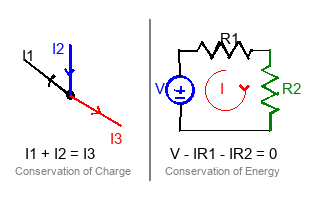
This is based on the conservation of charge — charge cannot accumulate at a node.
Kirchhoff's Voltage Law (KVL):
Around any closed loop in a circuit, the algebraic sum of all voltages (EMFs and voltage drops) equals zero.
This is based on the conservation of energy — energy gained from sources equals energy lost across resistances.
Significance in circuit analysis:
KCL and KVL are the foundation of all circuit analysis methods — mesh analysis, node voltage method, Thevenin's, Norton's, and superposition all derive their equations using these two laws. They apply to all linear and nonlinear circuits, DC or AC, and allow engineers to solve circuits of any complexity by writing simple algebraic equations.
In a circuit with multiple independent sources, the current (or voltage) at any element equals the algebraic sum of the contributions from each source acting alone.
Superposition theorem states that in a circuit with multiple sources, the current through any branch equals the algebraic sum of currents produced by each source acting independently, while all other sources are deactivated (voltage sources → shorted, current sources → open-circuited).
Circuit Parameters: 20V source, 5Ω, 10Ω (vertical middle branch), 10Ω (horizontal), 20Ω, and 4A current source.
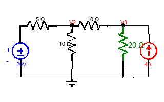
Step 1 — Deactivate 4A source (open circuit it), keep 20V source:
Using node analysis (V₂ = middle junction, V₃ = right node):
At V₃: (V₂ − V₃)/10 = V₃/20 → 2V₂ − 2V₃ = V₃ → V₂ = 3V₃/2
At V₂: (20 − V₂)/5 = V₂/10 + (V₂ − V₃)/10
Substituting V₂ = 3V₃/2 and solving:
40 = 5V₃ → V₃ = 8V
I'_{20} = V₃/20 = 8/20 = 0.4 A (downward through 20Ω)
Step 2 — Deactivate 20V source (short it), keep 4A source:
With 20V shorted, 5Ω connects from the junction to ground.
Equivalent resistance from junction to ground:
5Ω ∥ 10Ω = 10/3 Ω
At right node V₃: 4A enters node. Two parallel paths to ground exist:
- Path 1: 20Ω directly
- Path 2: 10Ω + 10/3 Ω = 40/3 Ω
Equivalent: 20 ∥ (40/3) = (20 × 40/3)/(20 + 40/3) = (800/3)/(100/3) = 8Ω
V₃ = 4A × 8Ω = 32V
I''_{20} = 32/20 = 1.6 A (downward through 20Ω)
Final Answer:
Both currents flow in the same direction (downward) through 20Ω:
I_{20} = I'_{20} + I''_{20} = 0.4 + 1.6 = 2 A
Any linear circuit with sources and resistors, viewed from two terminals (A and B), can be replaced by:
This simplified circuit is called the Thevenin Equivalent Circuit.
Why it's useful: When you need to find the current through a load for multiple load values, redoing the full circuit each time is inefficient. Thevenin reduces the whole network to one source + one resistor. Then finding I_L for any R_L is just one equation.
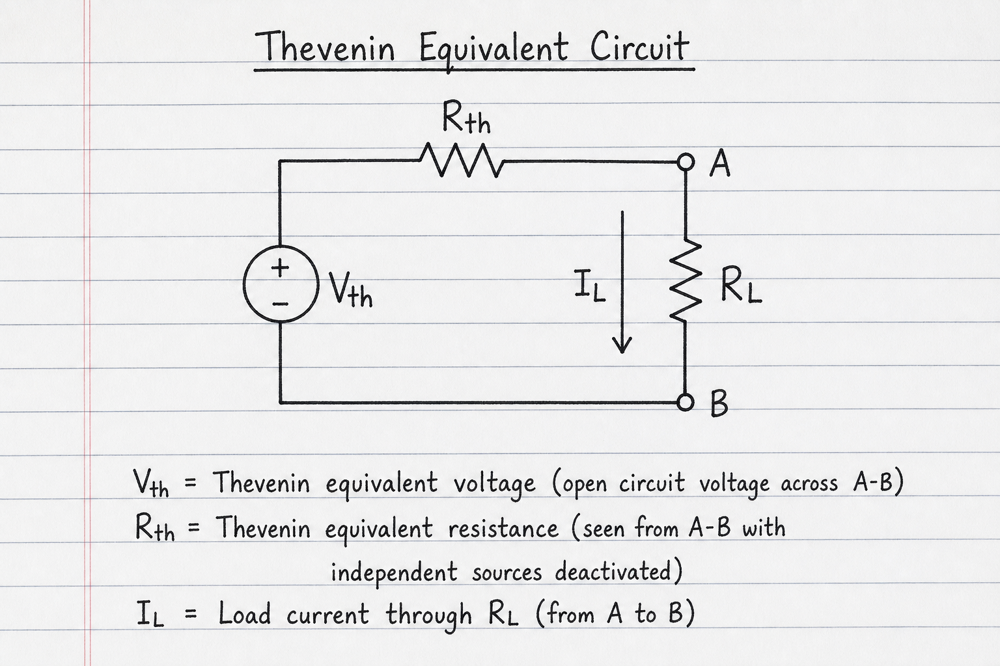
Thevenin's theorem states that any linear circuit can be replaced by a single voltage source V_th (open-circuit voltage at the terminals) connected in series with a resistance R_th (the equivalent resistance seen from the terminals with all sources deactivated).
Any linear circuit, viewed from two terminals, can be replaced by:
R_N is found the exact same way as R_th. In fact, R_N = R_th always.
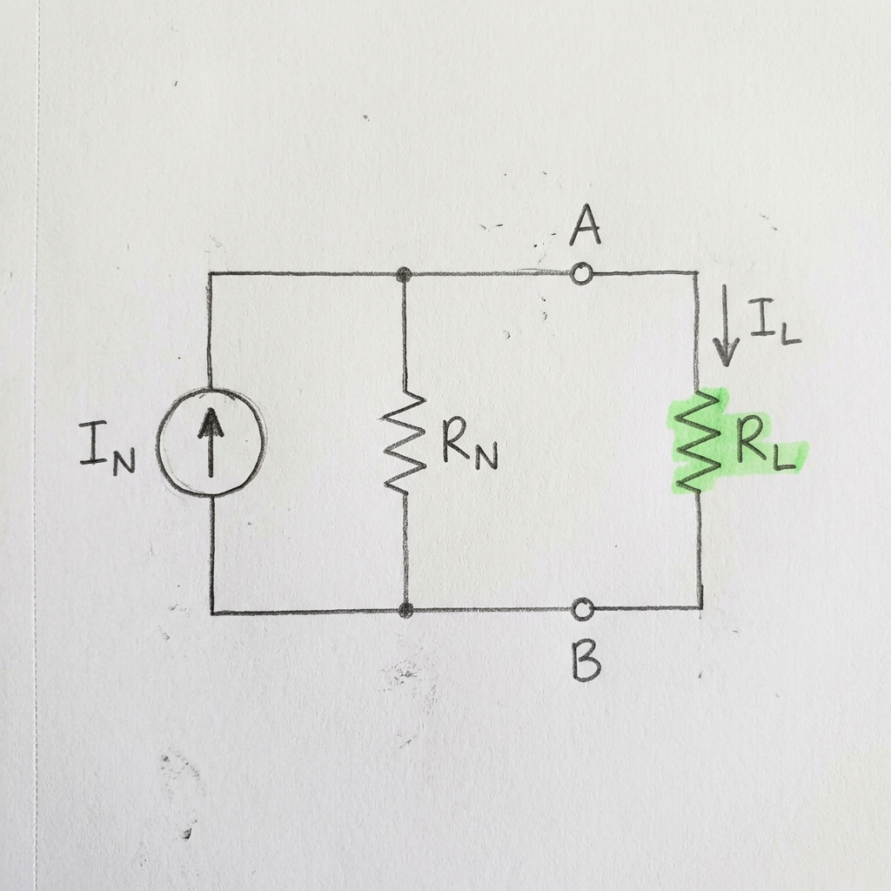
V_th = I_N * R_N
R_th = R_N
Use these equations to quickly cross-check your values when solving network numericals.
Norton's theorem states that any linear circuit can be replaced by an equivalent circuit consisting of a current source I_N in parallel with a resistance R_N, connected to the load terminals.
Circuit: 12V source, 3Ω (left series), 6Ω (middle shunt), 3Ω (right series), R_L = 1.5Ω at terminals A–B.
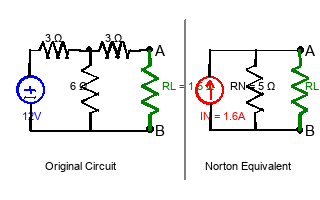
Step 1 — Find Norton Current I_N (short A–B, find I_sc):
With A–B shorted, the right 3Ω resistor connects the middle node directly to ground.
KCL at middle node (voltage = V₁):
(12 − V₁)/3 = V₁/6 + V₁/3
Multiply through by 6:
2(12 − V₁) = V₁ + 2V₁ → 24 − 2V₁ = 3V₁ → V₁ = 4.8V
I_N = I_sc = V₁/3 = 4.8/3 = 1.6 A
Step 2 — Find Norton Resistance R_N (deactivate 12V source, short it):
Looking into terminals A–B with source shorted, left 3Ω is in parallel with 6Ω:
3 ∥ 6 = (3 × 6)/(3 + 6) = 2Ω
This 2Ω is in series with the right 3Ω:
R_N = 2 + 3 = 5Ω
Step 3 — Draw Norton equivalent and solve:
Using current divider:
I_L = I_N × R_N / (R_N + R_L) = 1.6 × 5 / (5 + 1.5) = 8/6.5 = 1.23 A
V_L = I_L × R_L = 1.23 × 1.5 = 1.85 V
| Parameter | Value |
|---|---|
| Norton Current (I_N) | 1.6 A |
| Norton Resistance (R_N) | 5 Ω |
| Load Current (I_L) | 1.23 A |
| Load Voltage (V_L) | 1.85 V |
| Feature | Superposition | Thevenin | Norton |
|---|---|---|---|
| Purpose | Find response due to multiple sources | Simplify circuit to one voltage source + R | Simplify circuit to one current source + R |
| Equivalent Circuit | No single equivalent — sum of parts | V_th in series with R_th | I_N in parallel with R_N |
| When to use | Multiple independent sources | Finding current for various load values | Same as Thevenin; dual form |
| Key calculation | Partial currents for each active source | V_th (open circuit), R_th (deactivated) | I_N (short circuit), R_N (deactivated) |
| Relationship | Independent | R_th = V_th / I_N | R_N = R_th |
> Circuit: 12V source, resistors 3Ω (series with source), 6Ω (shunt), 3Ω (series), RL = 1.5Ω (load)
[DIAGRAM: Circuit with 12V source in series with 3Ω on top rail; node A: 6Ω shunt to ground; then 3Ω in series leading to node B; RL=1.5Ω from node B to ground; terminals across RL marked A-B]
Step 1 — Short RL, find Norton Current (IN = ISC):
Remove RL and short the load terminals (B to ground).
The 3Ω (right branch) now connects node A directly to ground (shorted through B).
From node A to ground: 6Ω ∥ 3Ω = (6×3)/(6+3) = 2Ω
Total resistance seen by source = 3Ω (source series) + 2Ω = 5Ω
Total source current = 12/5 = 2.4A
Voltage at node A = 2.4 × 2 = 4.8V
Norton current IN = current through the 3Ω (shorted branch) = 4.8 / 3 = IN = 1.6A
Step 2 — Deactivate source, find Norton Resistance (RN):
Short the 12V source (replace with wire).
Looking from load terminals (node B to ground):
From B: 3Ω (back to node A) in series with [6Ω ∥ 3Ω (source series resistor, now grounded)]
= 3 + (6∥3) = 3 + 2 = RN = 5Ω
Step 3 — Apply Norton Equivalent, find IL and VL:
Norton equivalent: Current source IN = 1.6A in parallel with RN = 5Ω. RL = 1.5Ω hangs across this.
IL = IN × RN / (RN + RL) = 1.6 × 5 / (5 + 1.5) = 8 / 6.5 = IL ≈ 1.23A
VL = IL × RL = 1.23 × 1.5 = VL ≈ 1.85V
DC (Direct Current) flows in one fixed direction. AC (Alternating Current) reverses direction periodically — it keeps swinging back and forth in a sinusoidal pattern.
Where:
V_rms = I_rms × R = 6 × 40 = 240 V
V_peak = V_rms × √2 = 240 × 1.414 = 339.4 V
V_avg = 0.637 × V_peak = 0.637 × 339.4 = 216.1 V
I_m = I_rms × √2 = 20 × 1.414 = 28.28 A
ω = 2πf = 2π × 25 = 50π rad/s
| Term | Symbol | Meaning | Formula |
|---|---|---|---|
| Frequency | f | Number of complete cycles per second | f = 1/T |
| Time Period | T | Time for one complete cycle | T = 1/f |
| Angular Frequency | ω | Rate of change of angle in radians | ω = 2πf |
| Peak Value | V_m / I_m | Maximum value in either direction | — |
| Phase | φ | Starting angle of the waveform at t = 0 | — |
| Phase Difference | θ | Angle by which one quantity leads/lags another | — |
In India, the mains supply is 50 Hz, so T = 20 ms and ω = 314 rad/s.
Impedance (Z) is the total opposition offered by a circuit to the flow of alternating current. It includes both resistance (R) and reactance (inductive X_L or capacitive X_C). It is measured in Ohms (Ω).
i. Instantaneous Value:
The value of an alternating quantity (voltage or current) at any specific instant of time. It keeps changing every moment as the waveform cycles. Represented as v = V_m sin(ωt) where the value depends on the time t you pick.
ii. Peak-to-Peak Value:
The total voltage swing from the maximum positive value to the maximum negative value in one complete cycle. If peak value is V_m, then:
Peak-to-peak value = 2V_m
For example, if V_m = 20V, the peak-to-peak value is 40V.
iii. Average Value:
The mean of all instantaneous values over one half-cycle of the AC waveform (taken over half cycle because the full cycle averages to zero for a sinusoidal wave).
V_avg = 0.637 × V_m = (2/π) × V_m
iv. Equation for sinusoidal voltage — f = 50 Hz, V_m = 20V:
v = V_m sin(2πft) = 20 sin(2π × 50 × t)
v = 20 sin(100πt) Volts
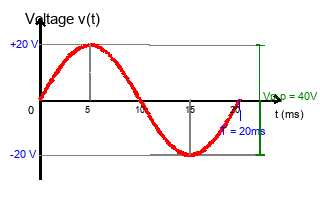
Definition: The DC equivalent of an AC quantity — the value of DC that would produce the same heating effect as the AC in the same resistance.
Because AC voltage is always changing, we use the RMS value for power calculations. RMS gives you the "effective" value.
The average of a full AC cycle is zero (positive and negative halves cancel). So average value is calculated over a half cycle only.
These are ratios used to describe the shape of a waveform.
Form Factor = RMS / Average = 0.707 / 0.637 = 1.11
Peak Factor (Crest Factor) = Peak / RMS = V_m / (V_m/√2) = √2 ≈ 1.414
RMS (Root Mean Square) value is the DC equivalent value of an AC current — the steady DC that would produce the same heating effect in a resistor.
1. Expression for instantaneous current:
i = I_m sin(ωt)
2. Square of instantaneous current:
i² = I_m² sin²(ωt)
3. Mean value of i² over one full cycle:
Using the identity: sin²(ωt) averaged over a full cycle = 1/2
Mean of i² = I_m² / 2
4. Take square root to get RMS:
I_rms = √(I_m² / 2) = I_m / √2
I_rms = 0.707 × I_m
This is the most important result in AC theory. It means the RMS value is always 70.7% of the peak value.
Significance: When we say household supply is 230V, that is the RMS value. The actual peak voltage is 230 × √2 ≈ 325V. All AC meters read RMS values.
AC quantities like voltage and current vary sinusoidally with time. Representing them on a time graph is messy when multiple quantities are involved.
A phasor is a rotating vector that represents the magnitude and phase of a sinusoidal quantity. You freeze the rotation at t = 0 and draw it as an arrow.
Why it's useful:
Key rules:
When only resistance is in the circuit:
Impedance: Z = R
Phasor Diagram: V and I vectors point in the same direction.
An inductor opposes changes in current. When AC flows through it:
Higher the frequency, higher the opposition (inductor blocks high-frequency AC more).
Impedance: Z = X_L = jωL
Memory tip: ELI — In an inductive (L) circuit, E (voltage) comes before I (current) → current lags voltage.
A capacitor opposes changes in voltage. When AC flows through it:
Higher the frequency, lower the opposition (capacitor passes high-frequency AC easily).
Impedance: Z = X_C = -j/(ωC)
Memory tip: ICE — In a capacitive (C) circuit, I (current) comes before E (voltage) → current leads voltage.
| Property | Resistor (R) | Inductor (L) | Capacitor (C) |
|---|---|---|---|
| Opposition | Resistance R | Reactance X_L = ωL | Reactance X_C = 1/ωC |
| Phase Relation | V and I in phase | I lags V by 90° | I leads V by 90° |
| Power Consumed | Yes (active power) | No (purely reactive) | No (purely reactive) |
| Frequency Effect | No change | X_L increases with f | X_C decreases with f |
A resistor and inductor connected in series with an AC supply. The resistor consumes active power while the inductor stores and returns reactive power.
What happens: Current lags behind voltage by some angle φ (between 0° and 90°).
The voltage across R (V_R) and voltage across L (V_L) are at 90° to each other. Total voltage is their vector sum:
| Quantity | Formula |
|---|---|
| Inductive Reactance | X_L = 2πfL |
| Impedance | Z = √(R² + X_L²) |
| Current | I = V/Z |
| Voltage across R | V_R = IR |
| Voltage across L | V_L = IX_L |
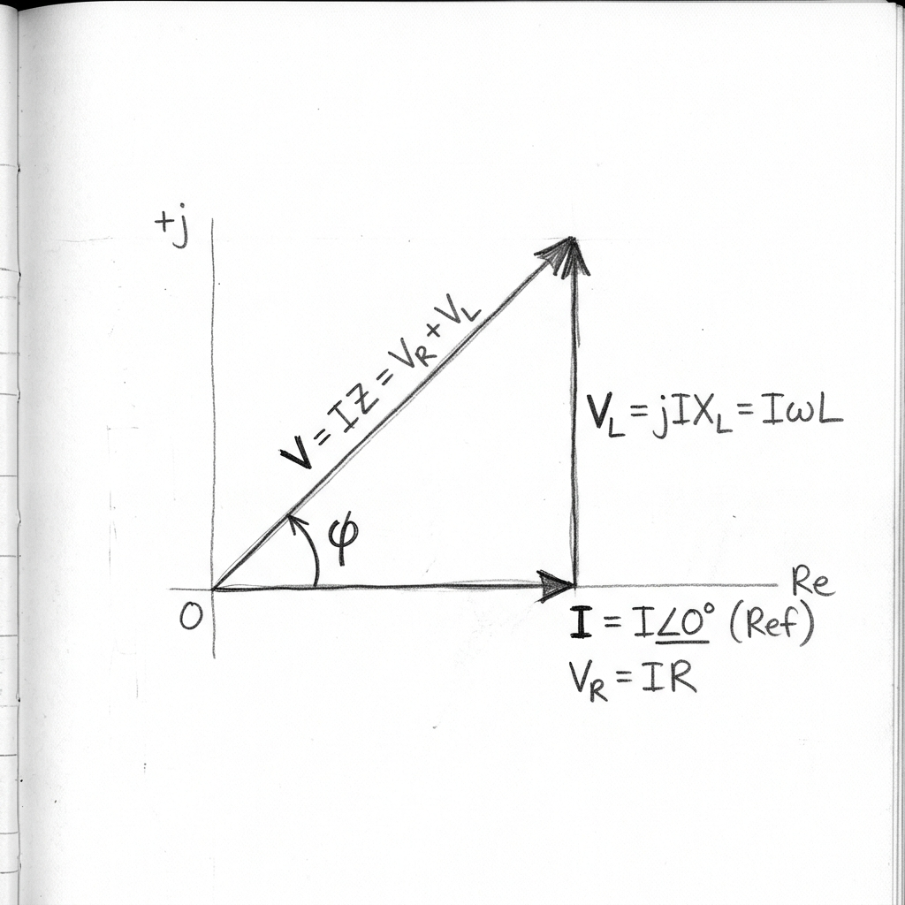
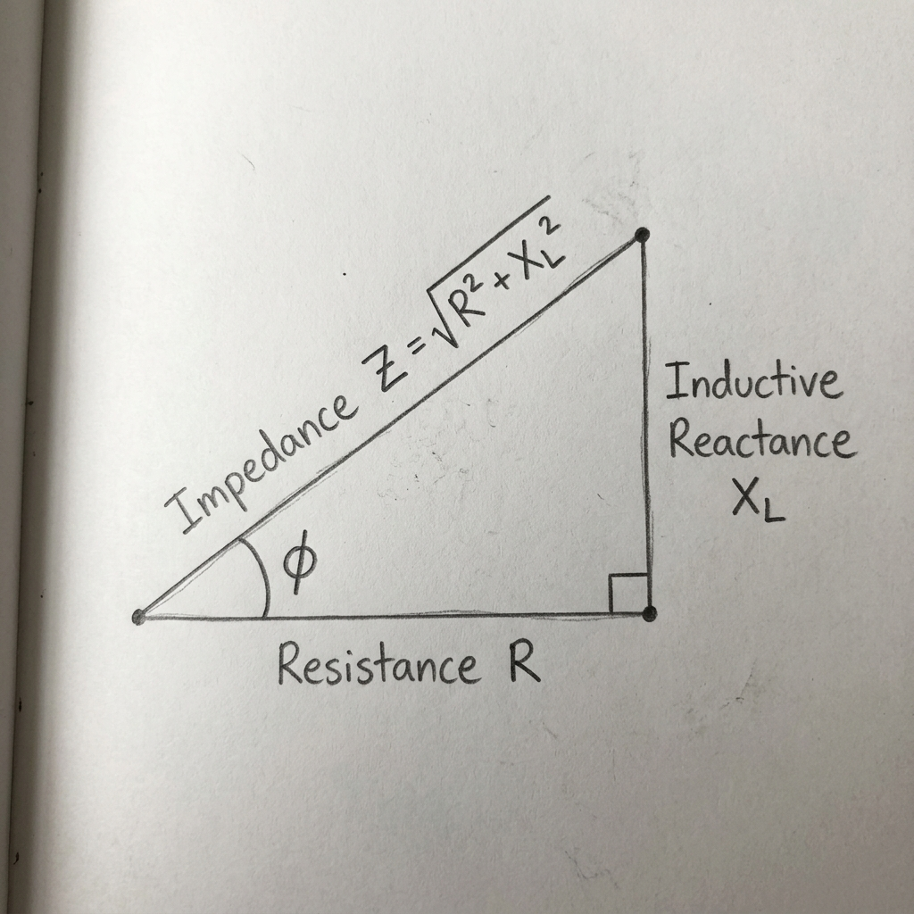
In a series RL circuit, a resistor R and an inductor L are connected in series to an AC supply of voltage V.
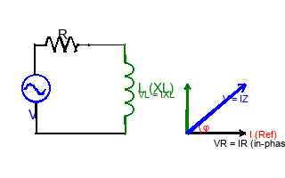
1. Voltage relationships:
The voltage across R is V_R = IR, which is in phase with the current. The voltage across L is V_L = IX_L, which leads the current by 90°. Since these are 90° apart, total voltage is found by phasor addition:
V = √(V_R² + V_L²)
2. Impedance:
Z = √(R² + X_L²), where X_L = 2πfL is the inductive reactance in Ohms.
3. Phase angle:
The current lags the supply voltage by angle φ, where:
tan φ = X_L / R → φ = tan−¹(X_L / R)
4. Power factor:
cos φ = R/Z (lagging, since current lags voltage in an inductive circuit)
5. Current:
I = V/Z
Key point: The higher the frequency, the greater X_L becomes, so the circuit becomes more inductive and the phase lag increases.
A resistor and capacitor connected in series with an AC supply.
What happens: Current leads voltage by angle φ (between 0° and 90°).
| Quantity | Formula |
|---|---|
| Capacitive Reactance | X_C = 1 / (2πfC) |
| Impedance | Z = √(R² + X_C²) |
| Current | I = V/Z |
| Voltage across R | V_R = IR |
| Voltage across C | V_C = IX_C |
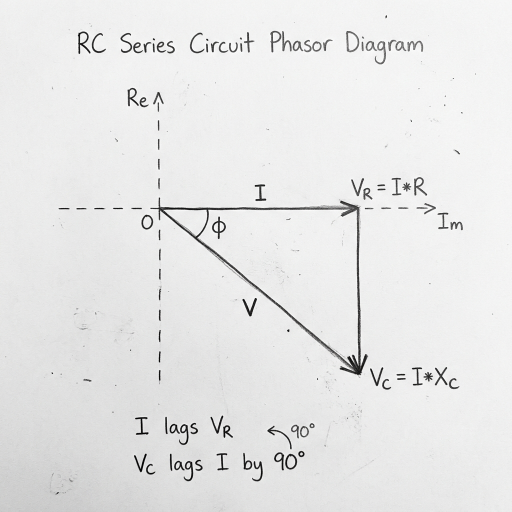
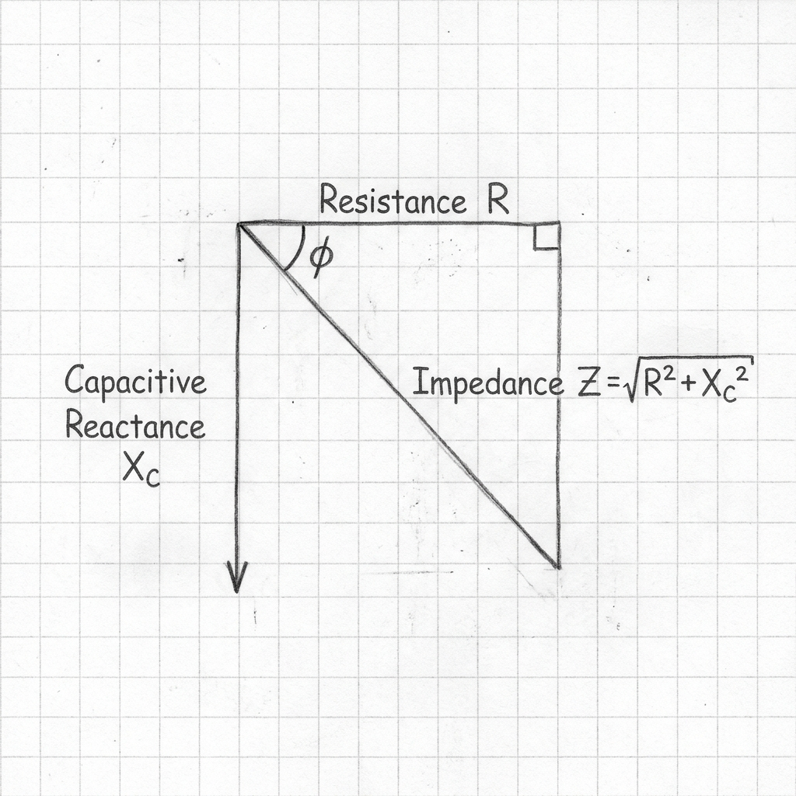
In a series RC circuit, a resistor R and capacitor C are connected in series to an AC supply.
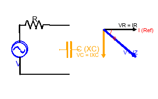
1. Voltage across R: V_R = IR (in phase with current)
2. Voltage across C: V_C = IX_C, where X_C = 1/(2πfC) — this lags the current by 90°
3. Capacitive Reactance:
X_C = 1 / (2πfC)
As frequency increases, X_C decreases — a capacitor passes high-frequency AC more easily.
4. Impedance:
Z = √(R² + X_C²)
5. Phase angle:
The current leads the voltage by angle φ (opposite of RL circuit):
tan φ = X_C / R → φ = tan−¹(X_C / R)
Current leads voltage in a capacitive circuit.
6. Power Factor:
cos φ = R/Z (leading)
The power factor tells how much of the apparent power is actually doing useful work. A PF of 1 means pure resistive circuit; PF close to 0 means mostly reactive (no real power consumed).
Contains R, L, and C all in series. The inductive and capacitive reactances oppose each other directly.
| Condition | Circuit Behaviour | Phase Relation |
|---|---|---|
| X_L > X_C | Inductive circuit dominates | Current lags voltage |
| X_C > X_L | Capacitive circuit dominates | Current leads voltage |
| X_L = X_C | Resonance condition | Current and voltage in phase (Z = R minimum) |
At resonance, the net reactance is zero. The impedance is purely resistive and is at its absolute minimum value, causing maximum current flow.
f_r = 1 / (2π√(LC))
Unlike DC circuits where P = VI, AC circuits must account for the phase difference φ between voltage and current waveforms.
Active Power (Real Power) — P: The actual power consumed to do useful work (heat, light, mechanical motion). Unit: Watt (W)
P = VI cos φ = I²R
Reactive Power — Q: The power stored and returned by inductors/capacitors. It does no real work. Unit: Volt-Ampere Reactive (VAR)
Q = VI sin φ = I²X
Apparent Power — S: The total raw power supplied by the generator. Unit: Volt-Ampere (VA)
S = VI = I²Z
The three components of AC power form a right-angled triangle:
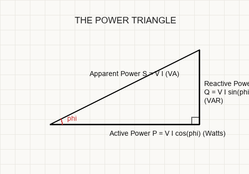
cos φ = P / S = R / Z
Power factor indicates how efficiently a circuit utilizes the supplied electrical power.
Lag/Lead: For RL series circuits, current lags voltage (lagging PF). For RC series circuits, current leads voltage (leading PF).
In any AC circuit containing resistance and reactance, three types of power exist simultaneously:
1. Active Power (P):
Also called real power or true power. This is the power actually consumed and converted to heat, light, or mechanical work.
P = VI cos φ (unit: Watts, W)
2. Reactive Power (Q):
Power that oscillates between source and reactive components (inductors and capacitors) without doing useful work.
Q = VI sin φ (unit: Volt-Ampere Reactive, VAR)
3. Apparent Power (S):
The total power supplied by the source — the product of RMS voltage and current, without considering phase.
S = VI (unit: Volt-Ampere, VA)
4. Relationship (Pythagoras applied to power):
S² = P² + Q²
5. Power Factor:
cos φ = P/S = Active Power / Apparent Power
A power factor of 1 means all power is active (purely resistive). A low power factor means most power is reactive — inefficient. Power factor correction (using capacitors) is done in industries to bring PF close to 1.
[DIAGRAM: Phasor diagram of balanced 3-phase star system — three phase voltage phasors VR, VY, VB at 120° apart from neutral N, and line voltage phasors VRY, VYB, VBR connecting line terminals showing they are √3 times larger and 30° ahead of respective phase voltages]
1. Setup in Star (Y) Connection:
In a star-connected system, all three phase windings share a common neutral point (N). The voltage measured from any line terminal to neutral is the phase voltage (Vph). The voltage measured between any two line terminals is the line voltage (VL).
2. Relation Between VL and Vph:
Consider line voltage VRY (between R and Y terminals):
VRY = VRN − VYN = VR − VY (phasor subtraction)
The phase voltages VR and VY have the same magnitude (Vph) but are 120° apart.
|VRY| = |VR − VY| = √(Vph² + Vph² − 2×Vph×Vph×cos120°)
= √(Vph² + Vph² + Vph²) = √(3 × Vph²)
VL = √3 × Vph
3. Current in Star Connection:
In a star connection, each line conductor carries the current from one phase winding. There is no splitting or combining of currents at the neutral point (for balanced loads). Therefore:
IL = Iph (line current equals phase current)
4. Summary:
For a balanced 3-phase star-connected system:
- Line voltage VL = √3 × Phase voltage Vph (i.e., VL ≈ 1.732 × Vph)
- Line current IL = Phase current Iph
Example: In a 415V, 3-phase supply: Vph = 415/√3 = 240V (standard Indian single-phase supply)
A transformer transfers electrical energy from one circuit to another using electromagnetic induction — without any electrical contact between the two circuits. It can increase (step-up) or decrease (step-down) the AC voltage.
A changing magnetic flux induces an electromotive force (EMF) in a nearby coil. This is the governing physical principle of transformers.
A transformer has three main parts:
Core: Silicon steel (soft iron laminated sheets) — used because it has high permeability and low hysteresis loss.
Windings: Copper — used because of its low resistivity and good conductivity.
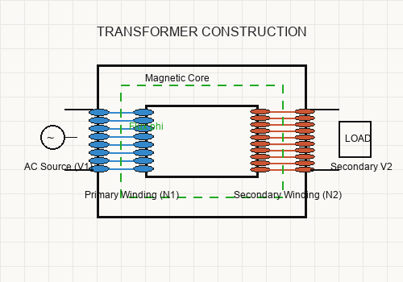
When AC flows through the primary coil, it creates a continuously changing magnetic flux in the iron core. This changing flux links with the secondary winding and induces an EMF in it via mutual induction.
| Variable | Meaning |
|---|---|
| V₁, V₂ | Primary and secondary terminal voltages (V) |
| N₁, N₂ | Number of turns in primary and secondary coils |
| I₁, I₂ | Primary and secondary currents (A) |
Note: When voltage steps up, current steps down proportionally to conserve power (assuming an ideal transformer).
| Type | Condition | Example Use Case |
|---|---|---|
| Step-up | N_2 > N_1 → V_2 > V_1 | Power transmission stations (high voltage minimizes line losses) |
| Step-down | N_2 < N_1 → V_2 < V_1 | Home appliance adapters, mobile phone chargers |
A transformer transfers electrical energy from one circuit to another through electromagnetic induction, with a change in voltage level.
The governing equation is:
where N₁, N₂ = number of turns; V₁, V₂ = voltages; I₁, I₂ = currents.
Step-Up Transformer:
N_2 > N_1, so V_2 > V_1. It increases the voltage from primary to secondary. Current on the secondary side decreases proportionally (since power is conserved: V_1 I_1 = V_2 I_2). Used in power transmission lines where high voltage is needed to reduce current and minimize losses.
Step-Down Transformer:
N_1 > N_2, so V_2 < V_1. It decreases the voltage. Current on the secondary side increases. Used in household distribution to step 11kV or 33kV down to 230V for home use.
In both cases, power is ideally conserved (ignoring losses): Input VA = Output VA.
DC produces a constant (steady) current. A constant current creates a constant magnetic flux — it does not change with time.
Since there is no change in flux (dΦ/dt = 0), there is no induced EMF in the secondary winding according to Faraday's Law. The transformer simply fails to function.
A transformer is designed exclusively for AC. When DC is applied, it fails to function and may actually be damaged. Here is why:
1. Transformer operates on Faraday's law:
The induced EMF in the secondary coil is e = −N dΦ/dt. An EMF is only induced when the magnetic flux is changing (dΦ/dt ≠ 0).
2. DC produces constant flux:
Direct current is steady. A steady current in the primary creates a constant magnetic flux in the core. Since flux is not changing, dΦ/dt = 0, so no EMF is induced in the secondary. Energy transfer fails completely.
3. No back EMF in primary:
In AC operation, the changing flux induces a back EMF in the primary that limits the current. With DC, there is no changing flux, so no back EMF is generated.
4. Primary acts as a low-resistance wire:
The DC resistance of the primary winding is very small (just the winding's copper resistance, typically a few ohms). Without back EMF, an extremely large current flows through the primary.
5. Result — overheating and failure:
This massive current causes severe I²R heating, burns the insulation, and destroys the winding within seconds.
In short: A transformer needs a changing flux to function — and only AC can create that. DC gives constant flux, zero output, and a burnt primary coil.
A 3-phase induction motor converts three-phase AC electrical energy into mechanical rotation. The rotor is not electrically connected to the supply — it gets its energy purely through induction (similar to a transformer secondary).
The speed of the rotating magnetic field is called synchronous speed (N_s):
Where f is supply frequency (typically 50 Hz in India) and P is the number of poles.
Common Pole Configurations at 50 Hz:
The rotor speed (N) lags the synchronous speed. The difference is expressed as slip (s):
The synchronous speed formula is:
Where:
Substituting the values:
N_s = (120 × 50) / 26 = 6000 / 26 ≈ 230.77 RPM
This curve demonstrates how the torque produced by the induction motor changes as slip goes from standstill (s=1) to synchronous speed (s=0).
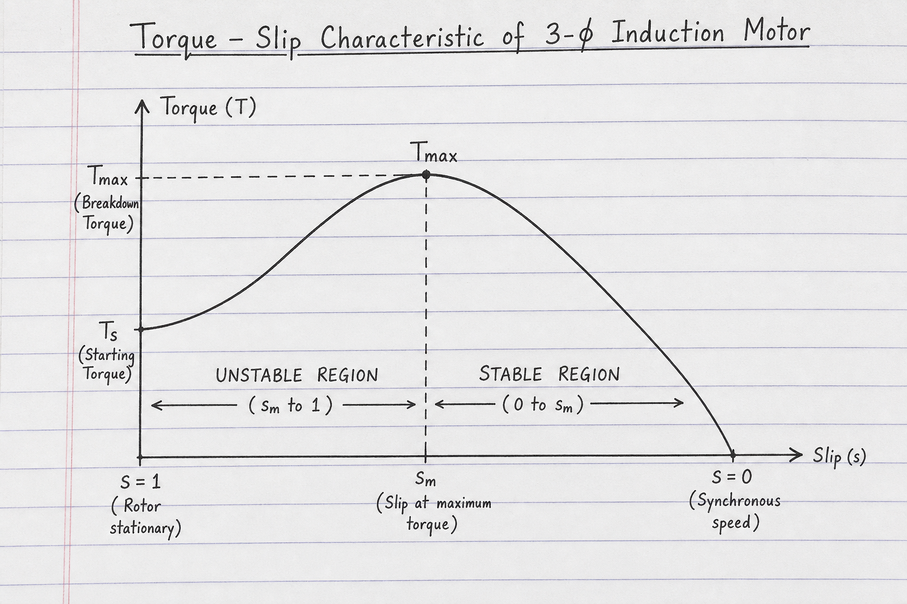
| Operating Point / Zone | Slip Value | Behaviour Description |
|---|---|---|
| s = 1 (Standstill) | 100% | Rotor speed N = 0. Torque produced here is starting torque (T_st). |
| Breakdown Torque | s ≈ 20% – 25% | Torque reaches its absolute maximum peak (T_max). If loaded beyond this, motor stalls. |
| Stable Region | s = 0 to s_mt (Low Slip) | Normal operating region. As load increases, slip increases slightly, and torque increases to match it. |
| Unstable Region | s = s_mt to 1 (High Slip) | If motor enters this region under load, it cannot sustain speed and will quickly decelerate to a halt. |
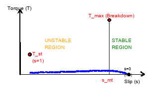
1. What Slip Is:
Slip is the difference between synchronous speed (N_s) and actual rotor speed (N), expressed as a fraction:
At standstill (N = 0), s = 1. At synchronous speed (N = N_s), s = 0 (which never actually happens in a loaded motor).
2. Low Slip Region (Normal Operating Zone — s = 0 to s_mt):
In this region, torque is nearly proportional to slip. As load increases slightly, rotor slows just a bit, slip increases slightly, and torque rises to match the load. This is the stable operating region — the motor self-corrects when load changes.
3. Maximum Torque — Breakdown Torque:
As slip increases beyond a critical value, torque reaches its peak called breakdown torque or maximum torque (T_max). This is the highest torque the motor can deliver without stalling. If load exceeds this, the motor cannot recover.
4. High Slip Region (s = breakdown slip s_mt to 1):
Beyond the breakdown point, torque actually decreases as slip increases. This is the unstable region — if the motor enters here, it will stall completely (s → 1) unless the load is reduced. Normal operation never occurs here.
5. Significance of the Curve:
The torque-slip curve tells us the starting torque (at s=1), the safe operating range, the maximum load capacity, and where the motor is stable. Engineers use this to select the right motor for a given load and to design starting methods for heavy-load applications.
A DC motor converts direct current (DC) electrical energy into mechanical rotation. It works on the principle that a current-carrying conductor placed inside a magnetic field experiences a mechanical force (Lorentz force).
Align your thumb, index finger, and middle finger perpendicular to each other:
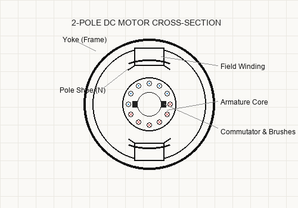
| Component | Functional Description |
|---|---|
| Yoke | The outer cylindrical frame (cast iron/steel). Provides mechanical support and serves as the magnetic return path. |
| Field Poles | Projecting iron pole pieces inside the yoke. Creates the main magnetic path inside the machine. |
| Field Winding | Copper coils wound around poles. Carrying current here excites and produces the stator magnetic field. |
| Armature Core | Laminated iron cylinder with slot grooves. Houses armature winding conductors and rotates. |
| Armature Winding | Coils in armature core slots. Carrying current here experiences the physical torque force. |
| Commutator | Segmented copper cylinder on the shaft. Converts alternating current inside the armature to unidirectional (DC) current in the external circuit — acts as a mechanical rectifier. |
| Brushes | Stationary carbon blocks pressing on the commutator. Ensures electrical contact between rotating armature and stationary external terminals. |
| Air Gap | Symmetric gap separating stator poles and rotor armature. Magnetic flux passes across this space. |
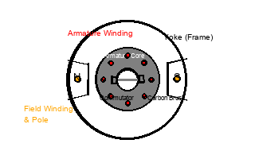
1. Yoke (Outer Frame):
The yoke is the outer cylindrical steel body. It provides mechanical support to the entire motor and also acts as the magnetic return path for the flux produced by the field poles. It must be made of material with high magnetic permeability.
2. Field Poles and Field Winding:
The field poles are projecting electromagnets fixed to the yoke. They carry the field winding (coils of wire) which, when energised with DC, produces the main magnetic flux in the motor. This flux is what the armature conductors cut to produce torque.
3. Armature Core and Armature Winding:
The armature is the rotating part. Its core is made of laminated silicon steel to reduce eddy current losses. The armature winding sits in slots cut into this core — these are the conductors that carry current and interact with the field flux to produce mechanical force (torque).
4. Commutator:
The commutator is a cylindrical assembly of copper segments mounted on the shaft, insulated from each other. It reverses the direction of current in the armature conductors every half rotation, ensuring that the torque always acts in the same direction — making continuous rotation possible.
5. Brushes:
Carbon brushes press against the rotating commutator and maintain electrical contact between the stationary supply circuit and the rotating armature winding. They are made of carbon to reduce wear and have good electrical conductivity. Without brushes, current cannot reach the armature.
Depending on how the field winding and armature winding are electrically interconnected, DC motors are classified into three types:
| Type | Connection Details | Operational Characteristics & Applications |
|---|---|---|
| Series Motor | Field winding is connected in series with armature winding. | Extremely high starting torque. Speed decreases dramatically as load increases. Never start a series motor at zero load (it can run away to dangerously high speed). Used in traction, electric trains, cranes. |
| Shunt Motor | Field winding is connected in parallel (shunt) with armature winding. | Nearly constant operating speed. Speed varies only slightly from no-load to full-load. Ideal for constant speed machinery: lathes, fans, centrifugal pumps. |
| Compound Motor | Features both a series field and a shunt field. | Combines the constant-speed properties of shunt and the starting-torque advantages of series. Used in heavy punch presses, elevators. |
Given:
S = 100 kVA, Pi (Iron loss) = 600 W, Pc (Full load copper loss) = 900 W, pf = 0.8 lag
1. Full Load Efficiency:
Output power = S × pf = 100,000 × 0.8 = 80,000 W
η_FL = Output / (Output + Pi + Pc) × 100
η_FL = 80,000 / (80,000 + 600 + 900) × 100
η_FL = 80,000 / 81,500 × 100 = 98.16%
2. Half Load Efficiency:
At half load, copper loss scales as (load fraction)²:
Pc_half = (1/2)² × 900 = 225 W
Output at half load = (100,000/2) × 0.8 = 40,000 W
η_half = 40,000 / (40,000 + 600 + 225) × 100
η_half = 40,000 / 40,825 × 100 = 97.98%
3. Load for Maximum Efficiency:
Maximum efficiency occurs when Pi = n² × Pc
n = √(Pi / Pc) = √(600 / 900) = √(0.667) = 0.816
So maximum efficiency load = 0.816 × 100 kVA = 81.6 kVA
4. Magnitude of Maximum Efficiency (at unity pf):
At max efficiency: Pi = Pc_max = 600 W (iron loss equals copper loss)
η_max = (81,600 × 1.0) / (81,600 + 600 + 600) × 100
η_max = 81,600 / 82,800 × 100 = 98.55%
Given:
Transformer: 220/400V, 10 kVA, 50 Hz
Full load copper loss: Pc = 120 W
Efficiency at full load, unity pf: η = 98% = 0.98
Step 1 — Find Iron Losses (Pi):
Full load output power = S × pf = 10,000 × 1.0 = 10,000 W
Using efficiency formula:
η = Output / (Output + Pi + Pc)
0.98 = 10,000 / (10,000 + Pi + 120)
10,000 + Pi + 120 = 10,000 / 0.98 = 10,204.08
Pi = 10,204.08 − 10,000 − 120
Pi = 84.08 W ≈ 84 W
Step 2 — Efficiency at Half Load, 0.8 pf lagging:
At half load, copper loss scales as (load fraction)²:
Pc_half = (0.5)² × 120 = 0.25 × 120 = 30 W
Half load output = (10,000 × 0.5) × 0.8 = 4,000 W
Iron loss remains constant at all loads: Pi = 84 W
η_half = Output / (Output + Pi + Pc_half) × 100
η_half = 4,000 / (4,000 + 84 + 30) × 100
η_half = 4,000 / 4,114 × 100
η_half = 97.23%
Given:
S = 25 kVA, Vi = 2000V, V2 = 200V
Iron loss Pi = 350W, Full load copper loss Pc = 400W
Power factor = 1.0 (unity)
Full Load Output Power:
P_out = S × pf = 25,000 × 1.0 = 25,000 W
Full Load Efficiency:
η = P_out / (P_out + Pi + Pc) × 100
η = 25,000 / (25,000 + 350 + 400) × 100
η = 25,000 / 25,750 × 100
η = 97.09%
Slip (s) = (Ns − N) / Ns = (1500 − 1440) / 1500 = 60/1500 = 0.04 or 4%
This means the rotor runs 4% slower than the rotating magnetic field — a typical value for a lightly loaded motor.
Diagram:
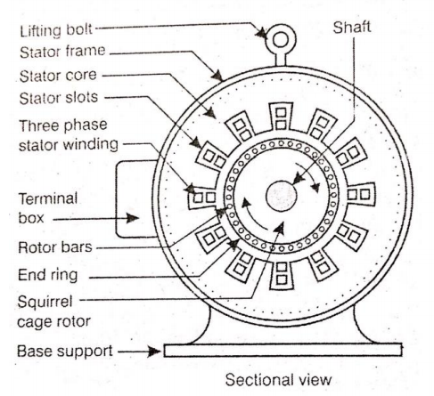
Diagram:
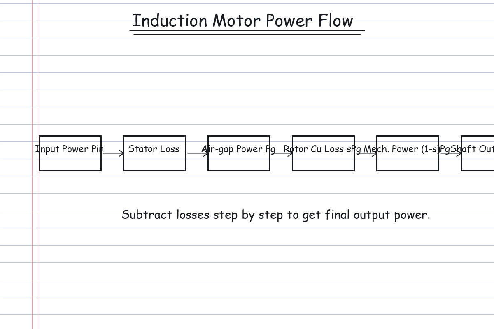
Diagram:
Diagram:
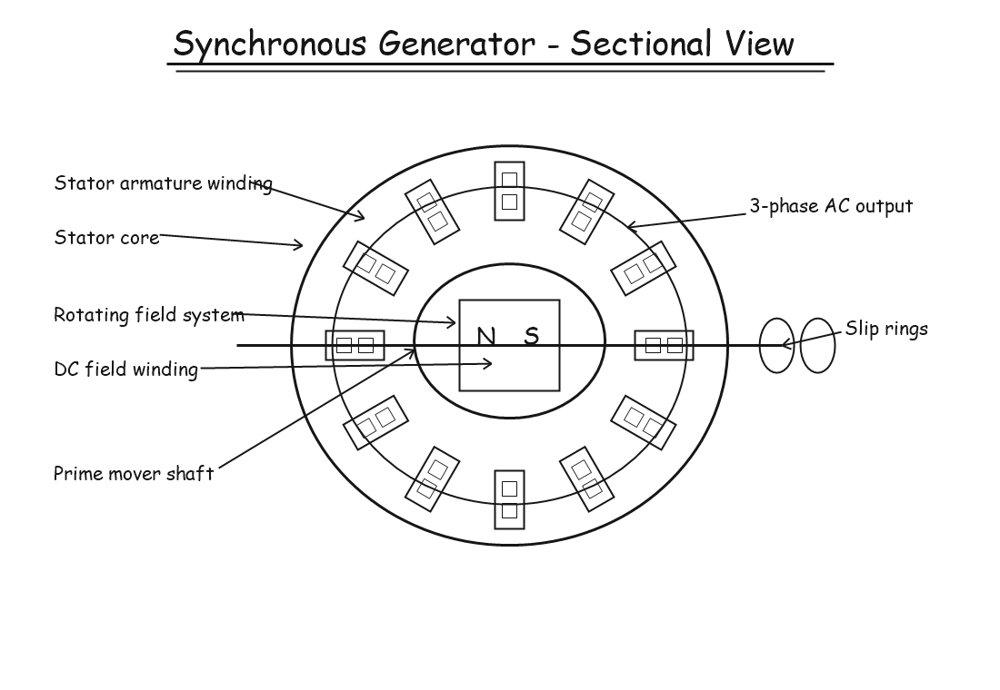
Diagram:
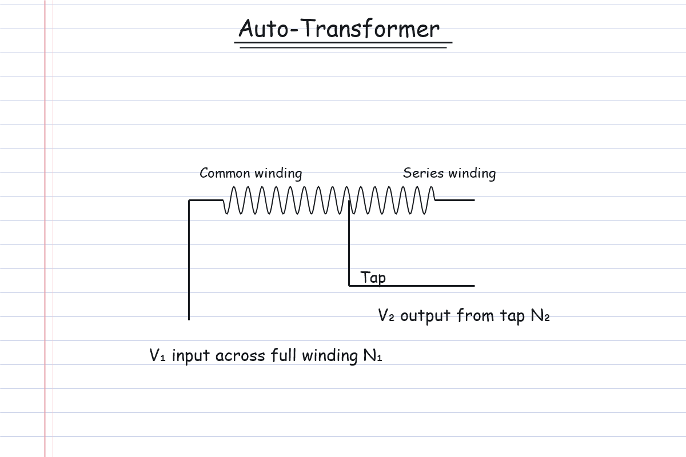
Diagram:
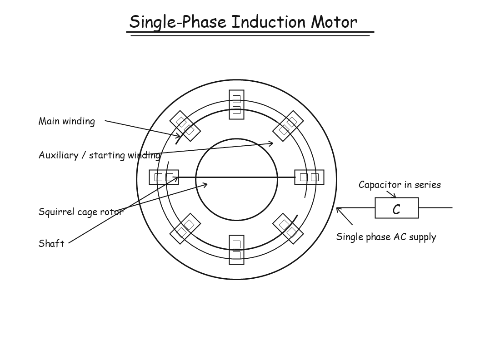
A wire is a single electrical conductor, typically made of copper or aluminium, which may or may not be insulated. A cable consists of two or more insulated wires bundled together inside a common protective outer sheath.
Cables allow multiple conductors (e.g., Live, Neutral, and Earth) to be routed together securely in a single package. The outer protective sheath shielding the inner wires provides critical mechanical protection, prevents short circuits, and guards against moisture/corrosive environments.
Electrical installations employ different cables depending on load current, environment temperature, and mechanical hazard levels:
This is the most common type used in low-voltage domestic wiring. The conductors are insulated with a layer of PVC plastic.
The role of PVC (Polyvinyl Chloride) coating in electrical wires includes:
In XLPE cables, the polyethylene insulation undergoes a chemical "cross-linking" treatment. This process changes the molecular structure, forming links between polymer chains that greatly increase heat resistance.
This cable contains one or more copper conductors wrapped in insulation, surrounded by a protective layer of steel wires or steel tape (the armour), which is then covered by an outer plastic sheath.
Unlike solid wires that use a single solid metal core, flexible cables use many extremely fine copper strands twisted together into a single conductor.
| Material | Key Properties | Primary Applications |
|---|---|---|
| Copper (Cu) | Very high electrical conductivity, highly flexible, low corrosion rate, but expensive. | Almost all domestic, commercial, and appliance internal wiring. |
| Aluminium (Al) | Lighter weight, much cheaper, but has only 60% of copper's conductivity and is more brittle. | Overhead power transmission lines, long-distance distribution feeders. |
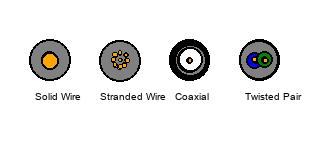
Types: Solid wire, Stranded wire, Coaxial cable, Twisted pair cable, and Armoured cable (SWA).
1. Solid (Single-Core) Wire:
A solid wire consists of one thick conductor (copper or aluminium) with a PVC insulation coat. Rigid and maintains its shape. Used in fixed household wiring inside walls and conduits — where the wire will never need to flex. Easy to terminate and connect. The PVC insulation prevents contact between conductors and prevents short circuits.
2. Stranded Wire:
Made of multiple thin conductors twisted together and covered with PVC insulation. The twisting gives flexibility — the wire can bend repeatedly without breaking. Used in appliance cords, flexible connections inside control panels, automotive wiring, and any application where the wire moves during service.
3. Twin-Core and Multi-Core Cables:
Multiple individually insulated cores are bundled inside a common outer sheath. A twin-core cable has a live and neutral. A 3-core cable adds an earth conductor. The colour coding (Brown = Live, Blue = Neutral, Green-Yellow = Earth per IEC 60446) identifies each core. Used for fixed domestic wiring, connecting switches, sockets, and appliances.
4. Coaxial Cable:
Has a centre conductor, surrounded by solid or foam insulation, then a braided or foil metallic shield, and an outer PVC jacket. The shield blocks external electromagnetic interference from reaching the centre conductor and also prevents the signal inside from radiating out. Used for cable TV, antenna connections, and RF signal transmission.
5. Armoured Cable (SWA — Steel Wire Armoured):
Has conductors insulated individually, then bundled inside an inner sheath, then wrapped with a layer of galvanised steel wires, and finally an outer PVC jacket. The steel armour provides mechanical protection against crushing, rodent attack, and accidental digging. Used for underground power distribution, outdoor installations, and industrial power supply.
An MCB is an electromagnetic safety switch designed to **automatically open the circuit** when current exceeds safe limits. It can be easily reset manually after clearing the fault, making it far superior to traditional fuses that must be replaced.
A fuse is a one-time protection device — once it blows due to overcurrent, it must be replaced entirely. A circuit breaker (like an MCB) is reusable — it trips and can be reset by flipping the switch. A fuse is cheaper but a circuit breaker is more convenient and reliable for repeated use.
The primary functions of an MCB are:
An MCB incorporates two separate tripping mechanisms inside its insulated housing:
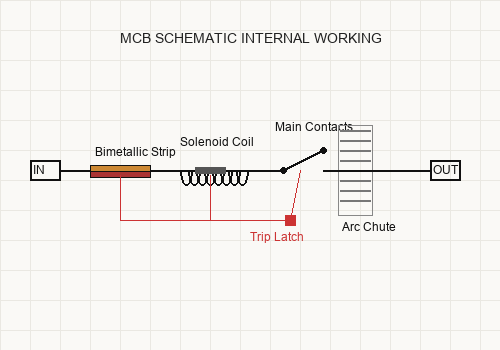
| Condition | Current level | Active Component | Resulting Action |
|---|---|---|---|
| Normal | ≤ Rated Current | None | Thermal and magnetic forces are too weak to trip the latch. Contacts remain closed. |
| Overload | Moderate excess (e.g., 1.5x) | Bimetallic Strip | Strip heats up slowly, bends over a few seconds/minutes, releases latch. Contacts open. |
| Short Circuit | Massive spike (e.g., >10x) | Solenoid Coil | Coil creates strong electromagnet pull, instantly pulls plunger, opens contacts in milliseconds. Arc chute extinguishes spark. |
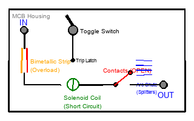
1. Main Construction Components:
2. Working Principle — Two Tripping Methods:
An ELCB (also commonly called an RCCB — Residual Current Circuit Breaker) is a life-saving device that detects **electric current leaking to ground** and instantly disconnects the supply. It is designed to prevent fatal electrocutions.
A normal fuse or MCB will only trip if current exceeds ratings (e.g., 16 A, 32 A). However, a current of just **30 mA to 50 mA** flowing through the human body is enough to paralyze the heart and cause death. An ELCB is designed to trip when leakage current reaches **30 mA**, acting in less than **30 milliseconds** to save lives.
The core of an ELCB/RCCB is a Core Balance Current Transformer (CBCT), which consists of:
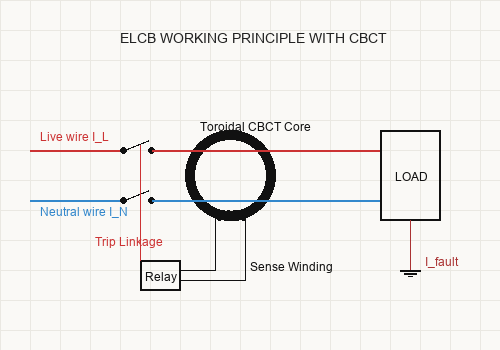
1. Normal Condition (Balanced Currents):
All current entering the load via the Live wire (I_L) returns via the Neutral wire (I_N). Thus, I_L = I_N. Since the Live and Neutral lines are wound in opposite directions, their magnetic fluxes inside the toroidal core are equal and opposite, canceling each other out. Net flux Φ = 0. No EMF is induced in the secondary winding. The trip coil remains unenergized, and the contacts stay closed.
2. Fault Condition (Leakage to Earth):
If an insulation failure occurs and a person touches the metallic casing of a faulty appliance, some current leaks through the person to the earth. Now, the return current in the Neutral wire is less than the current in the Live wire (I_L > I_N). The magnetic fluxes inside the core no longer cancel, leaving a net residual flux (Φ ≠ 0). This changing residual flux induces an EMF in the secondary winding. The induced voltage energizes the trip coil, which releases the latch and trips the main contacts instantly (within 30 ms).
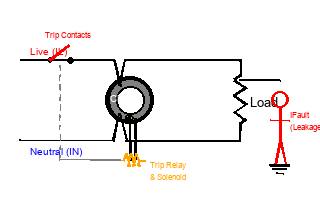
Construction:
The core of an Earth Leakage Circuit Breaker (ELCB / RCCB) is a Core Balance Current Transformer (CBCT). It consists of a high-permeability toroidal iron ring. Both the Live and Neutral wires from the supply pass through the center of this ring in opposite directions, acting as primary windings. A secondary sensing coil is wound around the ring and connected to an electromagnetic trip relay.
Working Principle:
1. Normal Condition:
During normal operation, the current flowing to the load via the Live wire is exactly equal to the current returning via the Neutral wire (I_L = I_N). Since they flow in opposite directions, the magnetic flux produced by the Live wire is perfectly cancelled by the flux produced by the Neutral wire. The net magnetic flux in the toroidal core is zero (Φ = 0). No voltage is induced in the secondary coil, and the trip relay remains inactive.
2. Fault Condition (Earth Leakage):
If an insulation fault occurs and leakage current flows to the earth (e.g., through a person touching a live metallic casing), the return current in the Neutral wire becomes less than the Live wire current (I_L > I_N). This imbalance creates a net residual magnetic flux in the toroidal core. The changing flux induces an alternating EMF in the secondary sensing coil. If the leakage reaches the threshold (usually 30 mA), the induced voltage energizes the trip relay, which pulls the mechanical latch and opens the main contacts in less than 30 ms, disconnecting the supply and saving the person from electrocution.
| Feature | MCB | ELCB / RCCB | MCCB |
|---|---|---|---|
| Full Form | Miniature Circuit Breaker | Earth Leakage Circuit Breaker | Moulded Case Circuit Breaker |
| Protects Against | Overload + Short Circuit | Earth Leakage (Shock) | Overload + Short Circuit (Heavy current) |
| Current Rating | Up to 100 A | Typically 25 A – 100 A | 100 A up to 1600 A |
| Sensing Mechanism | Bimetallic strip & Solenoid | Core Balance CT & Relay | Thermal & Magnetic (Higher capacity) |
| Primary Target | Wiring and equipment | Human life safety | Industrial machinery, heavy distribution panels |
| Where Used | Household distribution boards | In domestic/commercial panels with MCBs | Industrial switchboards and commercial mains |
MCCB (Moulded Case Circuit Breaker) handles much higher current capacities. An MCB is rated up to about 125A and is used in domestic and small commercial circuits. An MCCB is rated from 100A up to 2500A and is used in industrial panels, large commercial buildings, and distribution boards where high fault currents must be interrupted.
— MCB (Miniature Circuit Breaker) —
1. What MCB Does: An MCB automatically disconnects a circuit during overload or short circuit and can be manually reset — no fuse replacement needed. Rated for currents up to about 125A.
2. Construction and Working: It has two internal protective elements: a bimetallic strip (for overloads) and an electromagnetic solenoid (for short circuits). Under sustained overload, the bimetallic strip heats, bends, and trips the mechanism. Under a sudden short circuit, the massive current creates a strong magnetic field in the solenoid that instantly snaps the contacts open. An arc chute suppresses the arc.
— ELCB (Earth Leakage Circuit Breaker) —
3. What ELCB Does: An ELCB detects current leaking to earth (as small as 30mA) and disconnects the supply within 30–40ms. This protects humans from electrocution.
4. Working Principle: Both live and neutral wires pass through a toroidal magnetic core. Under normal conditions, live current equals return neutral current — their fluxes cancel. When fault current leaks to earth, live current exceeds neutral current. The net residual flux induces a voltage in the sensing coil, which triggers the relay and opens the trip contacts.
5. Key Difference: MCB protects equipment and wiring from overloads and short circuits (reacts to high currents). ELCB protects people from electrocution by detecting earth leakage currents.
Earthing (or Grounding) is the process of connecting the metallic enclosure or non-current carrying metal parts of an electrical appliance to the deep earth mass via a highly conducting wire. The Earth is considered to be a massive conductor at zero electrical potential.
Pipe earthing is the most common and effective earthing method, preferred in sandy or rocky soils. It uses a vertically buried **GI (Galvanised Iron) pipe** as the earth electrode.
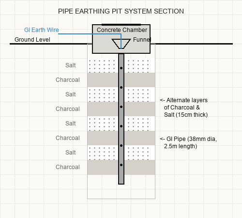
| Component | Key Functional Purpose |
|---|---|
| GI Pipe | Serves as the main earth electrode, providing a low-resistance path to discharge currents deep into the ground. |
| Charcoal Layer | Retains moisture in the soil surrounding the electrode. Prevents dry soil from forming a resistive barrier. |
| Salt (NaCl) | Dissolves to provide free ions, raising the chemical conductivity of the soil and lowering earth resistance. |
| Watering Funnel | Allows manual water addition during dry seasons to maintain moisture levels. |
| Wire Mesh | Filters out dirt and blockages during watering. |
| Perforations | Holes in the GI pipe that let water and dissolved ions pass freely between the pipe interior and surrounding soil. |
| Earth Resistance Target | Earth resistance should be kept as low as possible — ideally **less than 1 Ω** for heavy appliances and power stations. |
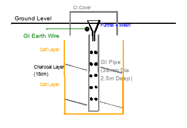
Pipe earthing is the most common and reliable method of earthing used in domestic and industrial installations. Its construction consists of:
1. Earth Electrode (GI Pipe):
A Galvanised Iron (GI) pipe of minimum 38 mm diameter and 2.5 metres length is placed vertically inside a dug earth pit. The pipe has several perforations (holes) drilled along its length to allow moisture to easily enter the surrounding soil.
2. Moisture Retaining Mixture:
The empty space around the GI pipe is filled with alternating layers of Charcoal and Salt (NaCl), up to a thickness of about 15 cm. The charcoal helps absorb and retain moisture in the soil, while the salt dissolves in the water to provide free ions, dramatically increasing the electrical conductivity (lowering the earth resistance) of the pit.
3. Watering Arrangement:
A funnel with a wire mesh is fitted at the top of the GI pipe. In summer or dry seasons, water is poured through this funnel to keep the charcoal-salt mixture wet, ensuring earth resistance remains below 1 ohm.
4. Connecting Earth Wire:
A heavy GI earth wire is securely bolted to the top of the pipe (above the funnel) and run to the main distribution board to connect to the metallic casings of equipment.
5. Inspection Chamber:
A brick or concrete chamber is built at ground level with a Cast Iron (CI) cover to protect the funnel and the earth wire connection point, and to allow for periodic maintenance and watering.
Q: What does MCB stand for?
A: Miniature Circuit Breaker — a protective switch that automatically opens a circuit during overloads and short circuits.
Q: What is the purpose of the bimetallic strip in an MCB?
A: It provides thermal overload protection. It bends when heated by moderate, prolonged excess current, mechanically releasing the trip latch.
Q: What is an ELCB and what does it detect?
A: Earth Leakage Circuit Breaker. It detects current leaking to earth by sensing an imbalance between Live and Neutral line currents.
Q: What is the standard trip threshold for an ELCB?
A: 30 mA leakage current, tripping the circuit in less than 30 milliseconds.
Q: What are the standard dimensions for Pipe Earthing?
A: A GI pipe of minimum 38 mm diameter, buried vertically at least 2.5 metres deep.
Q: Why are salt and charcoal added in an earthing pit?
A: Charcoal retains moisture around the electrode, while salt provides ionic conductivity, together minimizing earth resistance.
Q: Why is XLPE preferred over PVC in industrial installations?
A: XLPE has higher temperature resistance (90°C vs 70°C for PVC), superior mechanical strength, and longer continuous lifespan.
Q: Differentiate between MCB and ELCB targets.
A: MCB protects electrical wiring and equipment from damage. ELCB protects human life from shock and electrocution.
Diagram:
Diagram:
Diagram:
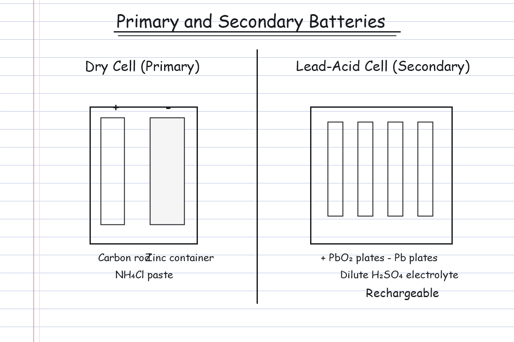
An ELCB (Earth Leakage Circuit Breaker) is used to protect people from electric shock caused by earth leakage faults. It detects any imbalance between the live and neutral currents (as small as 30mA) and disconnects the supply within 30–40ms. Used mandatorily in bathrooms, kitchens, outdoor sockets, and any location with risk of moisture contact.
Diagram:
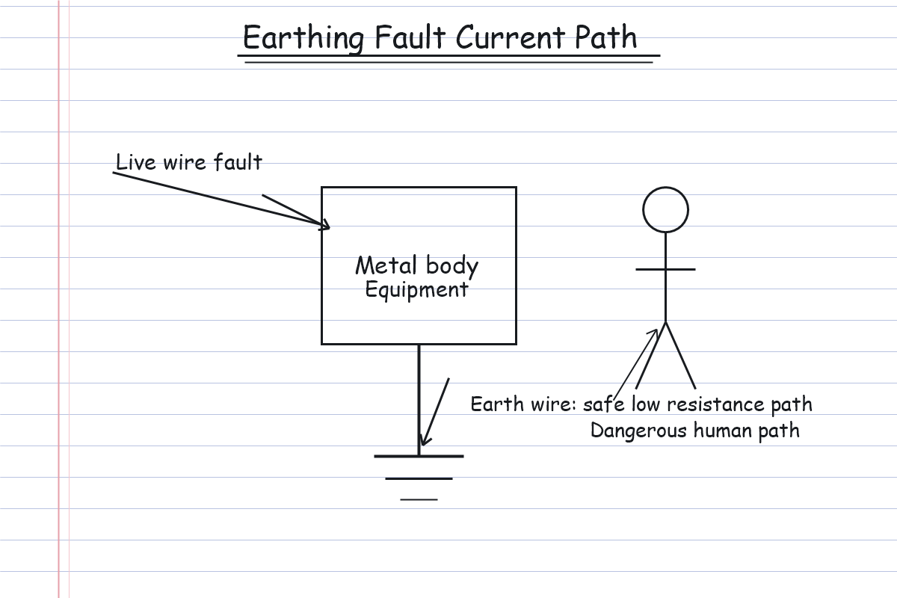
Assumed split: Earthing objective + methods = 7 marks, Two types of wires = 3 marks.
Diagram:
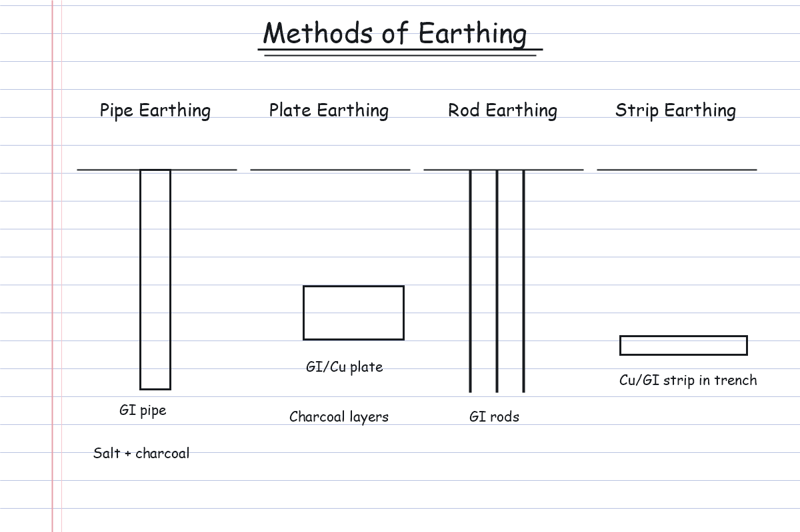
A transducer is a device that converts one form of energy into another. In electrical engineering, we specifically care about transducers that convert a physical quantity like displacement, temperature, pressure, force, or flow into an electrical signal such as voltage or current, because electrical signals are easy to measure, transmit, amplify, and process.
Examples: A microphone converts sound energy into an electrical signal. A thermocouple converts heat or temperature difference into voltage.
A transducer is a device that converts a non-electrical physical quantity into a proportional electrical signal.
A complete transducer system converts a physical input into a useful electrical output through sensing and conditioning stages.
Neat labeled diagram:
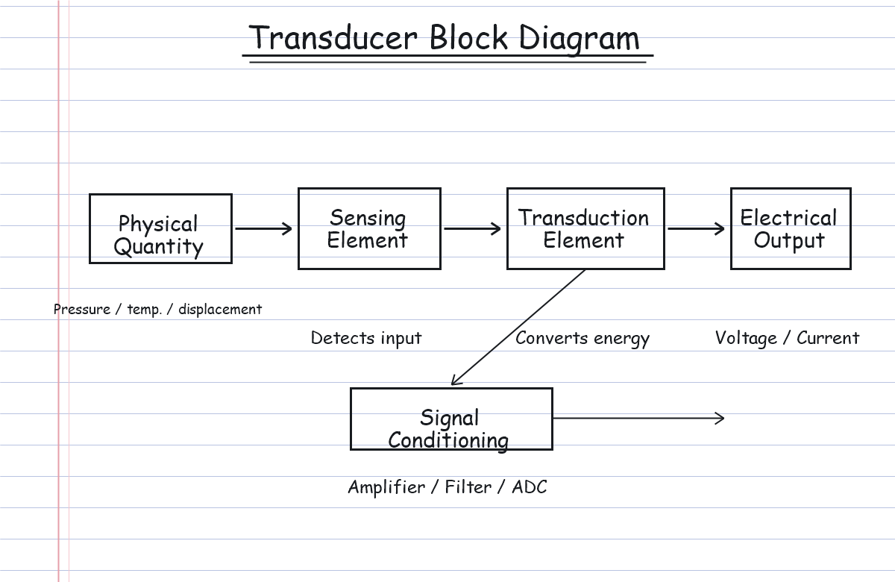
Some transducers perform sensing and conversion in one element. LVDT is a common example: it senses linear displacement and converts it directly into an AC voltage output.
| Type | What it does | Example |
|---|---|---|
| Primary Transducer | Converts the measurand into a mechanical or intermediate form. | Bourdon tube: pressure → displacement |
| Secondary Transducer | Converts the intermediate form into an electrical signal. | LVDT: displacement → voltage |
Most practical measurement systems use both in series. For example, a Bourdon tube plus LVDT can measure pressure as a final electrical output.
| Type | How it works | Example |
|---|---|---|
| Active Transducer | Generates its own electrical output; no external power supply is needed. | Thermocouple, piezoelectric crystal, photovoltaic cell |
| Passive Transducer | Changes resistance, capacitance, or inductance; needs external excitation to produce output. | LVDT, strain gauge, thermistor, capacitive sensor |
| Basis | Types |
|---|---|
| Output Type | Analog: LVDT, thermocouple; Digital: encoder |
| Measurand Type | Displacement, temperature, pressure, force, flow |
| Transduction Principle | Resistive, inductive, capacitive, piezoelectric, photoelectric |
Expect LVDT at 5-mark or 10-mark depth. Prepare construction, working, null position, output curve, direction detection, advantages, disadvantages, applications, and a neat labeled diagram.
LVDT stands for Linear Variable Differential Transformer. It is a passive, inductive transducer that measures linear displacement and converts it into a proportional AC voltage output.
The LVDT consists of one primary coil, two secondary coils, a sliding ferromagnetic core, and a cylindrical non-magnetic former.
Recommended LVDT labeled diagram (memorise this):
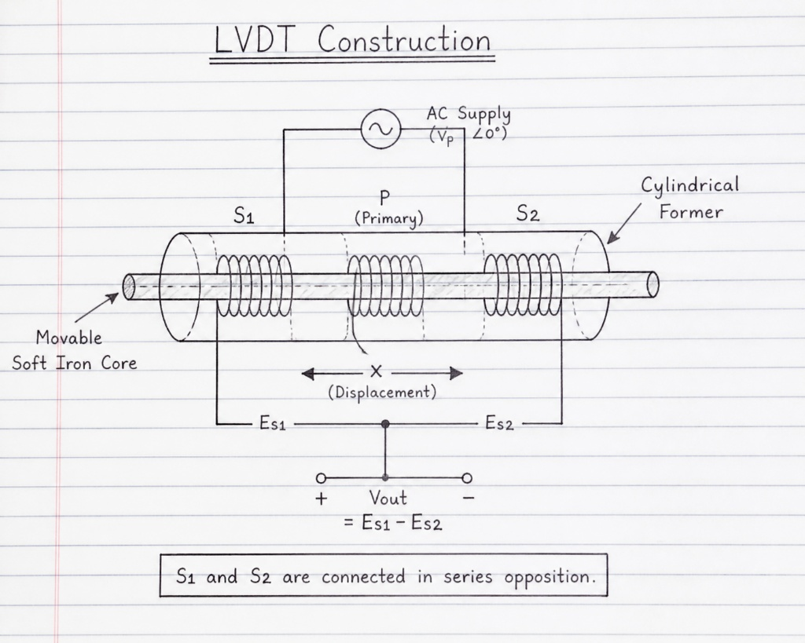
Optional alternate diagram: You may memorise either this alternate diagram or the recommended construction diagram above.
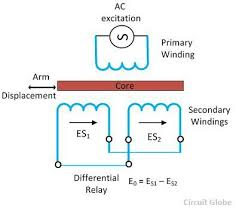
The two secondary coils are wound in opposite directions and connected in series opposition. This design makes the output zero at the center and proportional to displacement away from the center.
The primary coil is energized with an AC supply. This creates changing magnetic flux, which induces voltages in both secondary coils: E1 in S1 and E2 in S2. The output voltage is the differential output:
Eout = E1 − E2
| Core Position | Flux / Voltage Condition | Output Meaning |
|---|---|---|
| Null Position | E1 = E2 | Eout = 0 V; zero displacement reference |
| Toward S1 | E1 > E2 | Positive voltage; output is in phase with primary supply |
| Toward S2 | E2 > E1 | Negative voltage; output is 180° out of phase with primary supply |
Neat labeled characteristic curve:
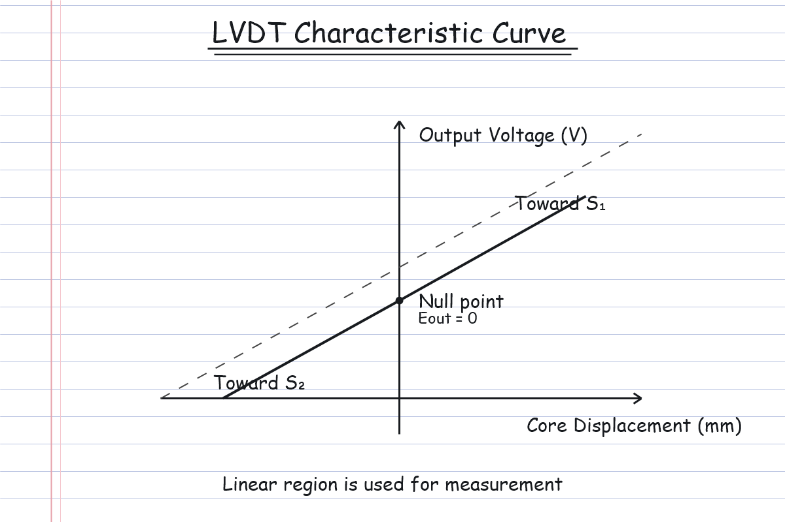
Direction: phase of output tells which side the core moved. Magnitude: amplitude of output tells how far it moved.
The object whose displacement needs to be measured is mechanically attached to the LVDT core. When the object moves, the core moves with it. The output voltage magnitude tells how much it moved, and the phase tells the direction. A phase-sensitive detector is used to distinguish positive and negative displacement and produce a proportional DC output if needed.
Optional clarity diagram for direction/phase:
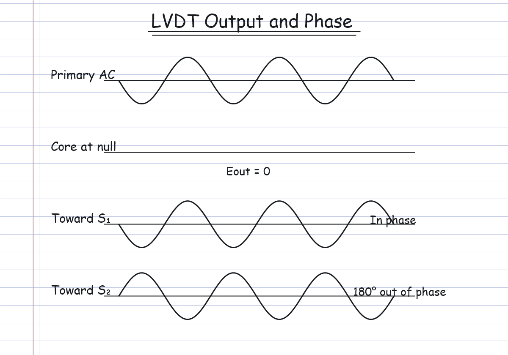
| Feature | Active Transducer | Passive Transducer |
|---|---|---|
| Power supply needed | No | Yes |
| Generates EMF | Yes, self-generating | No |
| Output | Direct voltage/current | Change in R, L, or C |
| Example | Thermocouple, piezoelectric crystal | LVDT, thermistor, strain gauge |
| Accuracy | Moderate | Generally higher |
Diagram:
The curve is linear and passes through zero at the null position (centre). Output voltage increases proportionally as the core moves in either direction, with phase reversing to indicate direction.
Most physical quantities like temperature, pressure, or displacement cannot be directly processed or displayed by electronic systems. A transducer converts these physical quantities into equivalent electrical signals, which can then be measured, recorded, and transmitted easily.
Diagram:
1. What LVDT Is:
LVDT (Linear Variable Differential Transformer) is an electromechanical transducer that converts linear mechanical displacement into an equivalent AC voltage output. It works on the principle of mutual induction.
2. Construction:
It has one primary coil at the centre and two secondary coils (S1 and S2) placed symmetrically on either side. A movable ferromagnetic core slides freely inside these coils without contact.
3. Operating Principle — Null Position:
When the core sits exactly at the centre, it couples equally with both S1 and S2. The voltages induced in S1 and S2 are equal and opposite (since connected in series-opposing), so the net output is zero volts. This is the null position.
4. Displacement Measurement — Core Moves:
When the core moves towards S1, mutual coupling with S1 increases and with S2 decreases. So the voltage of S1 becomes greater than S2. The differential output (VS1 − VS2) is now non-zero and proportional to how far the core moved. The magnitude of this output gives the amount of displacement.
5. Direction Detection:
The output voltage is an AC signal. The phase of the output compared to the primary supply tells the direction — if the core moved toward S1, output is in phase with primary; if toward S2, it is 180° out of phase. So direction and magnitude both come from one output.
Diagram:
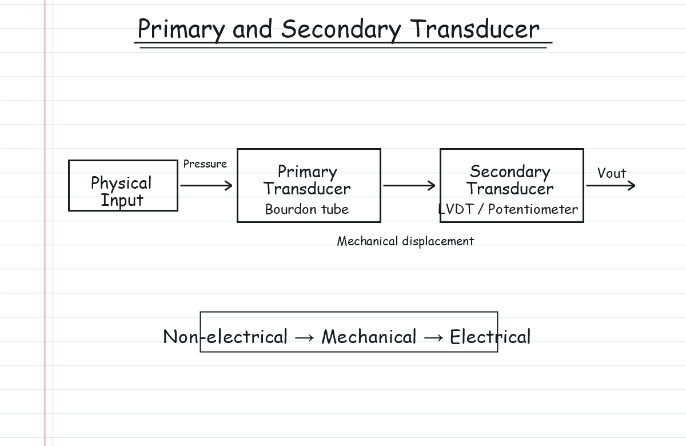
1. What a Transducer Does:
A transducer converts a non-electrical physical quantity (like force, temperature, pressure) into an electrical signal that can be processed and measured. The conversion may happen in one step or two steps — this gives us primary and secondary transducers.
2. Primary Transducer — Definition:
A primary transducer is the first stage that senses the physical input and converts it into another non-electrical form — usually mechanical (displacement, deformation, or movement). It does not directly give an electrical output.
3. Primary Transducer — Example:
In a pressure measurement system, a Bourdon tube is a primary transducer. When pressure is applied, the tube mechanically straightens or deforms. This mechanical movement is the intermediate output — not yet electrical.
4. Secondary Transducer — Definition:
A secondary transducer takes the mechanical output of the primary transducer and converts it into an electrical signal. It is the second stage that gives the final usable output in terms of voltage or current.
5. Secondary Transducer — Example:
Continuing with the Bourdon tube — the mechanical displacement of the tube tip is fed to a potentiometer (or LVDT). This potentiometer is the secondary transducer: it converts that small mechanical movement into a proportional change in voltage, which can be read on a meter or sent to a data system.
Diagram 1: Basic transducer working block diagram
Diagram 2: Two transducer examples
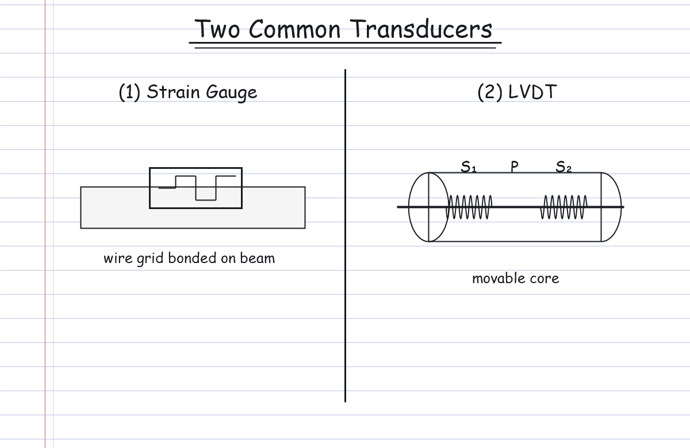
1. What a Transducer Does:
A transducer senses a physical quantity and converts it into a proportional electrical signal. The core idea is: physical world in → electrical signal out. This makes measurement, display, and control of physical quantities possible using electronic systems.
2. Working (from block diagram):
The sensing element directly contacts or responds to the physical input. Its output (which may be mechanical) goes to the signal conditioning stage, which converts and amplifies it into a clean, usable electrical output — voltage or current — that instruments can read.
3. Type 1 — Resistive Transducer (example: Strain Gauge):
A strain gauge is a fine wire or foil pattern bonded to a surface. When the surface is stressed or deformed, the wire stretches or compresses, changing its resistance. This resistance change is proportional to the strain (deformation). By measuring the resistance change using a Wheatstone bridge circuit, strain — and hence force or pressure — is accurately measured.
4. Type 2 — Inductive Transducer (example: LVDT):
An LVDT (Linear Variable Differential Transformer) converts linear displacement into a voltage. A movable iron core inside the coil assembly changes the mutual inductance between primary and secondary coils as it moves. The resulting differential voltage output is proportional to displacement. Used to measure small mechanical movements very precisely.
5. Why Transducers Are Essential:
Without transducers, quantities like temperature, pressure, and displacement are just invisible physical phenomena. Transducers are the bridge between the physical world and electronic measurement — they are the first and most critical component in any instrumentation or control system.
Diagram:
1. Recap of LVDT Structure:
The LVDT has a primary coil (AC excited) at the centre and two secondary coils S1 and S2 placed symmetrically, connected in series-opposition (their voltages subtract). A movable iron core inside controls how much flux links each secondary.
2. At Null Position — Zero Output:
When the core is exactly centred, mutual coupling to S1 and S2 is identical. VS1 = VS2. Since they are connected in series-opposition, Vout = VS1 − VS2 = 0V. This is called the null position and represents zero displacement.
3. Magnitude of Displacement:
When the core moves away from centre (in either direction), one secondary gets more coupling and the other gets less. The difference |VS1 − VS2| increases proportionally with how far the core moved. So the magnitude of the output voltage directly indicates how much displacement occurred. The relationship is linear over the working range.
4. Direction — How Phase Difference Works:
The direction of movement cannot be told from magnitude alone (moving 5mm left and 5mm right both give the same voltage magnitude). The phase resolves this. When the core moves toward S1, VS1 > VS2 and the output is in phase with the primary supply (0°). When the core moves toward S2, VS2 > VS1 and the output is 180° out of phase with the primary. A phase-sensitive detector (demodulator) in the readout circuit checks this phase and converts it to a positive or negative DC signal indicating direction.
5. Combined Reading:
The final output after demodulation is a signed DC voltage — the sign (+ or −) tells direction, the magnitude tells displacement amount. For example, +3V might mean 3mm displacement to the right and −3V means 3mm to the left. This makes the LVDT a complete displacement sensor that gives both magnitude and direction from a single output, making it extremely useful in precision engineering, machine tools, and aerospace applications.
A transducer is a device that converts one form of energy into another — typically a physical quantity (pressure, temperature, displacement) into an electrical signal. Example: a thermocouple converts temperature difference into a small voltage (thermoelectric effect).
---
LVDT (Linear Variable Differential Transformer) is used in:
machine tool positioning, aircraft control surface measurement, civil engineering (measuring structural deflection), medical equipment (measuring blood pressure via diaphragm movement), and industrial automation for precise linear displacement feedback.
---
Diagram:
1. Resistive Transducer — Strain Gauge:
A strain gauge works on the principle that the electrical resistance of a conductor changes when it is stretched or compressed. A fine metal wire or foil is bonded onto the surface whose strain needs to be measured. When the surface deforms under force, the gauge deforms with it — the conductor's length and cross-section change, altering its resistance. This resistance change is proportional to the strain applied.
2. How Strain Gauge Measures:
The resistance change is very small (typically milliohms), so it is measured using a Wheatstone bridge circuit, which converts the resistance change into a measurable voltage. Strain gauges are used to measure force, torque, pressure, and structural stress in bridges, aircraft, and medical devices.
3. Inductive Transducer — LVDT:
An LVDT (Linear Variable Differential Transformer) converts linear mechanical displacement into an AC voltage. It has a primary coil excited by AC and two secondary coils (S1 and S2) in series-opposition. A movable iron core links the primary to the secondaries through mutual induction.
4. How LVDT Measures:
At the centre (null position), coupling to both secondaries is equal — output is zero. As the core moves toward S1, VS1 increases and VS2 decreases — the differential output voltage (VS1 − VS2) is proportional to displacement. The phase of the output (in-phase or 180° out) tells the direction of movement. LVDT is highly linear, frictionless, and very precise.
5. Comparison:
The strain gauge is a passive resistive transducer — it changes resistance and needs an external bridge circuit. The LVDT is an inductive transducer — it produces an AC voltage output directly based on mutual inductance. Both are widely used in industrial instrumentation and measurement systems.
---
Diagram:
1. Basic Structure:
An LVDT consists of a hollow cylindrical former wound with three coils: one primary coil (P) at the centre and two secondary coils (S1 and S2) placed symmetrically on either side. A movable ferromagnetic core (usually iron alloy) slides freely inside the former without physically touching any winding. The primary is connected to an AC supply. S1 and S2 are connected in series-opposition (so their voltages subtract at the output).
2. Principle — Mutual Induction:
When AC is applied to the primary, it creates an alternating magnetic field. This field links to the secondary coils through the iron core — the amount of flux linking each secondary depends on where the core is positioned. The core acts as a variable flux guide, controlling how much primary flux couples to each secondary.
3. Operation at Null Position (Core Centred):
When the core is exactly at the centre, it links equally to S1 and S2. Both secondaries induce equal voltages. Since they are in series-opposition, Vout = VS1 − VS2 = 0V. This is the null position — zero output means zero displacement.
4. Operation When Core Is Displaced:
When the core moves toward S1: coupling with S1 increases, coupling with S2 decreases → VS1 > VS2 → Vout = VS1 − VS2 is positive and proportional to displacement. The magnitude of Vout gives how far the core moved (linear relationship). The phase of Vout compared to primary supply gives direction — toward S1 means in-phase (0°), toward S2 means 180° out of phase.
5. Advantages of LVDT:
No friction since the core never touches the coils — infinite mechanical life. Output is perfectly linear over a wide range. Very sensitive — can detect displacements of a few micrometres. Robust and sealed against harsh environments. Used in aerospace, machine tools, and industrial automation for precise linear position measurement.
---
---
Diagram:
The curve is a straight line through the origin. Zero output = null position (core centred). Voltage magnitude increases linearly with displacement. Positive and negative outputs represent opposite directions of movement.
---
Diagram:
1. The Two-Stage Concept:
Many physical quantities (like pressure or force) are first converted into an intermediate mechanical form, and then that mechanical output is converted into electricity. The first conversion is done by the primary transducer and the second by the secondary transducer.
2. Primary Transducer — Definition:
A primary transducer senses the original physical input and converts it into a non-electrical, usually mechanical quantity (displacement, deformation, rotation). It does not produce an electrical output directly. Its output is a physical change that can then drive a secondary transducer.
3. Primary Transducer — Example (Bourdon Tube):
In a pressure gauge, the Bourdon tube is a curved hollow tube. When fluid pressure is applied inside, the tube tends to straighten — its free end moves proportionally to the applied pressure. This tip displacement is the mechanical output of the primary transducer. The Bourdon tube has sensed pressure and converted it into displacement — but no electrical signal yet.
4. Secondary Transducer — Definition:
A secondary transducer takes the mechanical output from the primary transducer and converts it into an electrical signal (voltage or current). It is the stage that actually produces the measurable electrical output.
5. Secondary Transducer — Example (Potentiometer or LVDT):
The displacement of the Bourdon tube tip is connected to a potentiometer's wiper arm (the secondary transducer). As the tip moves, the wiper slides along the resistive track, changing the output voltage proportionally. The voltage now represents the original pressure applied. Together, Bourdon tube (primary) + potentiometer (secondary) = a complete pressure transducer system.
---
Diagram:
1. Construction — Coil Assembly:
An LVDT has a cylindrical former wound with three coils. The primary coil (P) sits at the centre and is excited by a fixed AC voltage (typically 1–10V, 50Hz–20kHz). The two secondary coils (S1 and S2) are placed symmetrically on either side of the primary. S1 and S2 are connected in series-opposition — meaning their induced voltages are subtracted, not added, at the output terminals.
2. Construction — The Core:
A movable ferromagnetic core (iron-nickel alloy rod) slides freely inside the former bore. It has no physical contact with any coil — this is important for frictionless, wear-free operation. The core is mechanically coupled to whatever object whose displacement is being measured.
3. Null Position (Core Centred):
When the core is exactly centred, it links the same amount of primary flux to both S1 and S2. Voltages induced: VS1 = VS2. Since they oppose each other, Vout = VS1 − VS2 = 0 V. This is the null point — zero displacement, zero output.
4. Core Displaced Toward S1:
Mutual inductance between primary and S1 increases; between primary and S2 decreases. Now VS1 > VS2, so Vout = VS1 − VS2 is a positive AC voltage. Magnitude of Vout is proportional to displacement distance. Phase of Vout is in phase with primary supply (0°) — indicating direction toward S1.
5. Core Displaced Toward S2:
VS2 > VS1, output is negative (180° phase shift relative to primary). A phase-sensitive demodulator in the readout circuit converts this to a signed DC: positive = one direction, negative = other direction. Final output: signed DC voltage with sign = direction and magnitude = displacement amount. Highly linear, very sensitive, and ideal for precision measurement.
---
Diagram:
1. Working Principle — The Block Diagram:
A transducer's job is to convert a physical quantity into an electrical signal. The sensing element makes direct contact with the physical quantity being measured. The transduction element performs the actual energy conversion (mechanical → electrical, thermal → electrical, etc.). The signal conditioning block amplifies, filters, or linearises the output so it is usable by meters, data loggers, or control systems.
2. Type 1 — Capacitive Transducer:
A capacitive transducer works on the principle that capacitance C = ε₀εᵣA/d depends on the distance (d) between plates, plate area (A), or dielectric material (ε). Any physical quantity that changes one of these parameters changes the capacitance proportionally. Example: a capacitive pressure sensor uses a flexible diaphragm as one plate — when pressure is applied, the diaphragm deflects, changing d and therefore C. This capacitance change is converted to voltage by an oscillator circuit. Used in touch screens, microphones, and industrial pressure measurement.
3. Why Capacitive Transducer is Useful:
It is non-contact (no friction), has extremely fast response, very high sensitivity, and works over a wide temperature range. It requires an AC circuit to measure capacitance — DC excitation doesn't work.
4. Type 2 — Thermoelectric Transducer (Thermocouple):
A thermocouple consists of two dissimilar metal wires (e.g., iron and constantan) joined at one end (the hot junction — placed at the measurement point) and open at the other end (the cold junction or reference). The Seebeck effect causes a small EMF to develop proportional to the temperature difference between the hot and cold junctions. This EMF (in millivolts) is measured and converted to temperature by calibration tables.
5. Why Thermocouple is Widely Used:
Thermocouples can measure temperatures from −200°C to +2000°C (depending on type — Type K, Type J, Type R, etc.). They are robust, cheap, small, and require no power supply. Used in furnaces, gas burners, jet engines, and food processing where temperature must be monitored continuously and reliably.
---
---
Diagram:
1. What LVDT Is and Why It Is Used:
LVDT (Linear Variable Differential Transformer) is a passive inductive transducer that converts linear mechanical displacement into a proportional AC voltage output. It is the most widely used linear position sensor in industrial and aerospace applications because it is frictionless (core never touches coils), has infinite resolution (no electrical contact to wear out), is highly linear, and operates reliably in harsh environments.
2. Construction in Detail:
The LVDT body is a hollow cylindrical former wound with three coils:
- Primary coil (P): Wound at the centre. Connected to an AC excitation source (typically 1–10V RMS, 50Hz to 20kHz). This creates an alternating magnetic field.
- Secondary coil S1: Wound to the left of the primary.
- Secondary coil S2: Wound to the right of the primary, identical to S1.
- S1 and S2 are connected in series-opposition — meaning their terminal connections are reversed, so Vout = VS1 − VS2 (subtraction, not addition).
- A movable ferromagnetic core (iron-nickel alloy, high permeability) slides axially inside the former bore. It is mechanically attached to the object being measured. It never contacts the windings.
3. Working Principle — Mutual Induction:
The primary coil's AC magnetic field links to both secondary coils through the iron core. The iron core acts as a flux concentrator and guide — it channels primary flux into the secondary coils. The amount of flux linking each secondary depends entirely on how much of the core overlaps with that coil — i.e., the core's axial position.
4. At Null Position (Core Exactly Centred):
The core bridges equally between S1 and S2. Primary flux links equally to both. VS1 and VS2 are induced at equal magnitude. Since they are in series-opposition: Vout = VS1 − VS2 = 0V. This is the electrical null — zero output means zero displacement. The null is extremely precise and repeatable — a key advantage of LVDT.
5. Core Displaced Toward S1:
Mutual inductance between primary and S1 increases (more core overlap). Mutual inductance between primary and S2 decreases. VS1 rises, VS2 falls. Vout = VS1 − VS2 > 0. The output is a non-zero AC voltage in phase with the primary supply (0°). The magnitude of Vout is proportional to how far the core moved from null — the relationship is highly linear over the rated range.
6. Core Displaced Toward S2:
VS2 > VS1. Vout = VS1 − VS2 < 0. The output is an AC voltage 180° out of phase with the primary supply. Same magnitude relationship applies — distance from null gives magnitude, phase gives direction.
7. How Direction Is Decoded (Phase-Sensitive Detection):
The raw output is an AC signal — its magnitude tells displacement, its phase tells direction. A phase-sensitive demodulator (rectifier + filter) compares the output phase to the primary reference. In-phase signals are given a positive DC value; 180° out-of-phase signals are given a negative DC value. The final output after demodulation: +V means displacement in one direction; −V means displacement in the other. Magnitude = distance from null.
8. Linearity and Range:
The output voltage vs displacement relationship is linear over the LVDT's rated range (e.g., ±2mm, ±10mm, ±25mm depending on design). Outside this range, the output deviates from linearity. The sensitivity (output voltage per mm of displacement) is a key specification, typically quoted in mV/mm or V/mm.
9. Advantages:
Frictionless and wear-free — infinite mechanical life. No electrical contact between core and coils — no noise from contact friction. Very high resolution (limited only by signal conditioning electronics — nanometre resolution is achievable). Robust — can be fully sealed and used in oil, high pressure, or high temperature environments. Null position is absolute and repeatable — no drift.
10. Applications:
Used in machine tool linear position feedback, aircraft control surface position measurement, valve position control in power plants, civil engineering (monitoring bridge deflection and building settlement), medical devices (blood pressure measurement via pressure-to-displacement diaphragm), and hydraulic/pneumatic actuator position feedback in industrial automation.
---
Diagram:
1. Definition of Transducer:
A transducer is a device that converts one form of energy into another. In instrumentation and measurement, it specifically refers to devices that convert a physical or chemical quantity (mechanical, thermal, optical, chemical) into an electrical signal that can be processed, displayed, transmitted, or used for control. The inverse is also possible — converting electrical energy into a physical form (e.g., a loudspeaker converts electrical signals into sound). The block diagram shows: the sensing element makes contact with the measurand → the transduction element performs energy conversion → signal conditioning makes the output usable.
2. Why Transducers Are Fundamental:
No measurement or control system can work without transducers. Computers, meters, and controllers only understand electrical signals. Transducers are the interface that connects the physical world to electronic systems. Every sensor in a smartphone, aircraft, hospital, factory, or power plant is a transducer.
3. Category 1 — Resistive Transducers:
These convert the measurand into a change in electrical resistance.
- Principle: Physical quantity changes the conductor's geometry or material resistivity.
- Example: Strain Gauge — when a surface deforms under force, a bonded fine-wire grid stretches, changing its resistance proportionally to strain. Measured using a Wheatstone bridge circuit. Used for force, pressure, and torque measurement.
- Other examples: Thermistor (temperature changes resistance), potentiometer (displacement changes resistance via wiper position).
4. Category 2 — Inductive Transducers:
These convert the measurand into a change in inductance or mutual inductance.
- Principle: Changing the core position, air gap, or number of effective turns alters the coil's inductance or the mutual inductance between coils.
- Example: LVDT (Linear Variable Differential Transformer) — a movable iron core changes mutual inductance between a primary and two secondary coils. The differential output voltage is proportional to core displacement. Used for precise linear position measurement in machine tools, aerospace, and industrial automation.
5. Category 3 — Capacitive Transducers:
These convert the measurand into a change in capacitance (C = ε₀εᵣA/d).
- Principle: Any physical quantity that changes plate separation (d), effective plate area (A), or dielectric constant (εᵣ) changes the capacitance.
- Example: Capacitive microphone — sound waves cause a thin diaphragm to vibrate, changing the gap between the diaphragm and a fixed backplate. This changing capacitance, with a fixed charge (from a polarising voltage), produces a changing voltage — the audio signal. Also used in capacitive pressure sensors and touch screens.
6. Category 4 — Piezoelectric Transducers:
These exploit the piezoelectric effect — certain crystalline materials (quartz, PZT ceramics) generate an electric charge when mechanically stressed, and conversely deform when an electric field is applied.
- Principle: Mechanical stress → charge separation → measurable voltage across crystal faces.
- Example: Quartz crystal accelerometer — when the sensor experiences acceleration, an internal mass exerts a force on the quartz crystal. The resulting charge is proportional to the force (and thus acceleration). Used in vibration measurement, impact sensing, industrial accelerometers, and ultrasonic transducers (in sonar and medical imaging).
7. Category 5 — Thermoelectric Transducers:
These convert temperature difference into an electrical voltage using the Seebeck effect.
- Principle: When two dissimilar metals are joined at one end (hot junction) and left open at the other (cold/reference junction), a small EMF develops proportional to the temperature difference between the two junctions.
- Example: Type K Thermocouple (Chromel-Alumel) — can measure temperatures from −200°C to +1260°C. Widely used in furnaces, gas burners, jet engine exhausts, and any application where temperature must be sensed at a point without external power supply (thermocouples are self-generating — they need no excitation source). Output is in millivolts, read using a millivoltmeter calibrated in °C.
8. Additional Classification Axis — Active vs Passive:
Beyond the five categories above, transducers are also classified as:
- Active transducers: Generate their own electrical output without needing external power — e.g., thermocouple (generates EMF), piezoelectric sensor (generates charge), photovoltaic cell (generates voltage from light). They are self-generating.
- Passive transducers: Need external power/excitation to produce output — e.g., strain gauge (needs a Wheatstone bridge supply), LVDT (needs AC excitation), thermistor (needs a current source). The physical quantity modulates the electrical parameter rather than generating energy directly.
9. Selection Criteria for a Transducer:
Choosing the right transducer depends on: range and resolution required, operating environment (temperature, humidity, vibration), required accuracy and linearity, power availability, response time, cost, and whether galvanic isolation from the process is needed.
10. Summary Table:
| Category | Electrical Parameter Changed | Example | Typical Application | |---|---|---|---| | Resistive | Resistance (R) | Strain gauge, thermistor | Force, temperature, pressure | | Inductive | Inductance / Mutual inductance | LVDT | Linear displacement | | Capacitive | Capacitance (C) | Capacitive microphone | Sound, pressure, proximity | | Piezoelectric | Charge / Voltage (self-generating) | Quartz accelerometer | Vibration, ultrasound | | Thermoelectric | Voltage (Seebeck EMF) | Thermocouple | High-temperature measurement |
---
| Topic | Key Point |
|---|---|
| Transducer | Converts physical quantity → electrical signal. |
| Primary Transducer | Converts measurand → intermediate form. |
| Secondary Transducer | Converts intermediate → electrical signal. |
| Active Transducer | Self-generating, e.g. thermocouple and piezoelectric crystal. |
| Passive Transducer | Needs excitation, e.g. LVDT and strain gauge. |
| LVDT Full Form | Linear Variable Differential Transformer. |
| LVDT Null Position | Core at center → E1 = E2 → output = 0. |
| LVDT Positive Displacement | Core toward S1 → E1 > E2 → in-phase output. |
| LVDT Negative Displacement | Core toward S2 → E2 > E1 → 180° phase shift. |
| LVDT Direction Detection | Phase of output, either 0° or 180°. |
| LVDT Magnitude Detection | Amplitude of output voltage. |
| LVDT Major Advantage | Contactless design gives no friction and no wear. |
Always label Primary coil (P), Secondary coils (S1 and S2), Ferromagnetic core, AC supply input, Output (E1 − E2), null point, linear region, and phase reversal across the null point.
| Topic | Expected Marks | Required Output in Answer |
|---|---|---|
| KCL & KVL Laws | 10 Marks | Full statements, mesh diagrams, equations setup |
| Superposition Theorem | 10 Marks | Separate step circuits drawing, algebraic summation |
| Thevenin Equivalent | 5 - 10 Marks | Vth and Rth equations, final circuit drawing |
| RL / RC Circuits | 5 Marks | Impedance values, phasor diagram, phase angle |
| Power Triangle | 10 Marks (Sub) | Labeled triangle, units, PF factor calculation |
| RMS / Average Value | 2 - 5 Marks | Derivations, peak-factor ratios |
| Transformer Construction & DC Fail | 2 - 5 Marks | Core/windings labels, DC fail proof, turns ratio |
| Induction Motor Working & Torque-Slip Curve | 5 - 10 Marks | RMF concept, slip formula, labeled curve zones |
| DC Motor Construction & Working | 5 Marks | 8 main components, Fleming's Left-Hand rule |
| MCB Construction & Working | 5 - 10 Marks | Solenoid (short circuit) and Bimetallic (overload) mechanisms, arc chute, 3 states table, internal diagram |
| ELCB Working & CBCT | 10 Marks | Toroidal core diagram, normal (I_L = I_N) vs fault (I_L > I_N) conditions, 30 mA and 30 ms trip limits |
| Pipe Earthing Pit Installation | 10 Marks | Detailed pit cross section, GI pipe (38mm dia, 2.5m length), 15cm salt/charcoal, inspection chamber, funnel/mesh |
| Wires and Cables | 1 - 5 Marks | Wire vs cable definition, PVC (70°C) vs XLPE (90°C), SWA mechanical protection, copper vs aluminium |
| LVDT Construction & Working | 10 Marks | Former cylinder, P and S1/S2 opposite coils connected in series opposition, soft iron sliding core, AC supply, Null/S1/S2 positions |
| LVDT Characteristic Curve | 5 - 10 Marks | Core displacement vs output voltage, null point (E_out = 0V), linear operating region, phase-reversed out-of-phase region |
| Transducers Classification | 5 Marks | Primary vs secondary (Bourdon tube & LVDT), active vs passive (thermocouple vs LVDT), basic block diagram |